Train a classification model with the classif.rpart learner on the “Pima Indians Diabetes” dataset. Do this without using tsk("pima"), and instead by constructing a task from the dataset in the mlbench-package: data(PimaIndiansDiabetes2, package = "mlbench"). Make sure to define the pos outcome as positive class. Train the model on a random 80% subset of the given data and evaluate its performance with the classification error measure on the remaining data. (Note that the data set has NAs in its features. You can either rely on rpart‘s capability to handle them internally (’surrogate splits’) or remove them from the initial data.frame by using na.omit).
set.seed(1)data(PimaIndiansDiabetes2, package ="mlbench")task=as_task_classif(PimaIndiansDiabetes2, target ="diabetes", positive ="pos")splits=partition(task, ratio =0.8)splits
Calculate the true positive, false positive, true negative, and false negative rates of the predictions made by the model in Exercise 1. Try to solve this in two ways: (a) Using mlr3measures-predefined measure objects, and (b) without using mlr3 tools by directly working on the ground truth and prediction vectors. Compare the results.
With a false negative rate of 0.38, we miss a lot of people who have diabetes but are predicted to not have it. This could give a false sense of security. By lowering the threshold, we can reduce the false negative rate.
Apply a repeated cross-validation resampling strategy on tsk("mtcars") and evaluate the performance of lrn("regr.rpart"). Use five repeats of three folds each. Calculate the MSE for each iteration and visualize the result. Finally, calculate the aggregated performance score.
We start by instantiating our task and learner as usual:
Note instantiating manually is not necessary when using resample(), as it automatically instantiates the resampling for us, so we pass it a new resampling which has not been instantiated:
We can manually calculate these scores since rr contains all the individual predictions. The $predictions() method returns a list of predictions for each iteration, which we can use to calculate the MSE for the first iteration:
Alternatively, the autoplot() function provides defaults for the ResampleResult object. Note that it internally scores the resampling using the MSE for regression tasks per default.
`stat_bin()` using `bins = 30`. Pick better value with `binwidth`.
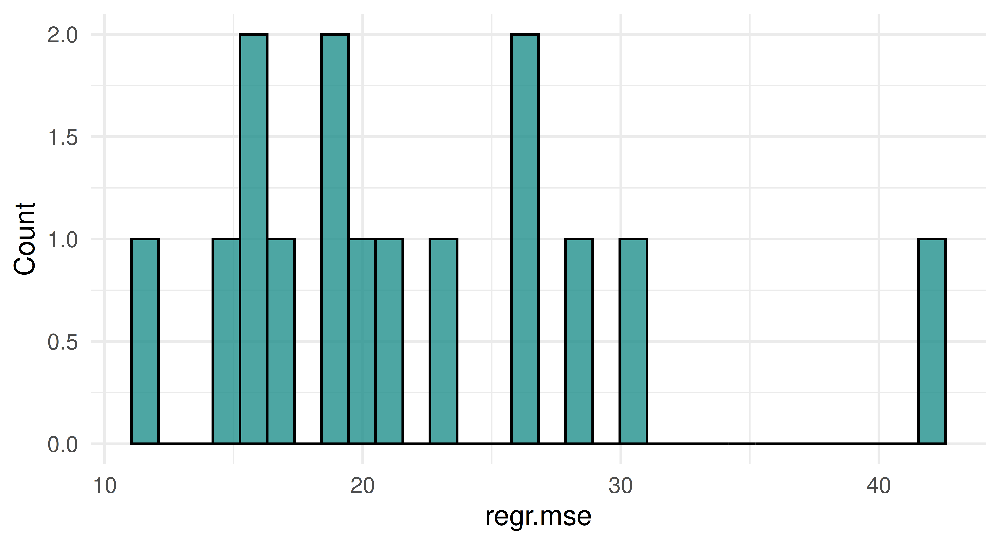
The aggregate score is the mean of the MSE scores across all iterations, which we can calculate using $aggregate() or by manually averaging the scores we stored before:
Use tsk("spam") and five-fold CV to benchmark lrn("classif.ranger"), lrn("classif.log_reg"), and lrn("classif.xgboost", nrounds = 100) with respect to AUC. Which learner appears to perform best? How confident are you in your conclusion? Think about the stability of results and investigate this by re-rerunning the experiment with different seeds. What can be done to improve this?
First we instantiate our learners with their initial parameters, setting the predict_type = "prob" once for all of them using lrns(). We then set the nrounds parameter for XGBoost to 100 and construct a resampling object for 5-fold CV:
In this example,lrn("classif.xgboost") outperforms lrn("classif.ranger"), and both outperform lrn("classif.log_reg"). Naturally this is only a visual inspection of the results — proper statistical testing of benchmark results can be conducted using the mlr3benchmark package, but for the purposes of this exercise a plot suffices.
When we re-run the same experiment with a different seed, we get a slightly different result.
The overall trend remains about the same, but do we trust these results? Note that we applied both lrn("classif.log_reg") and lrn("classif.ranger") with their initial parameters. While lrn("classif.log_reg") does not have any hyperparameters to tune, lrn("classif.ranger") does have several, at least one of which is usually tuned (mtry). In case of lrn("classif.xgboost") however, we arbitrarily chose nrounds = 100 rather than using the learner with its initial value of nrounds = 1, which would be equivalent to a single tree decision tree. To make any generalizations based on this experiment, we need to properly tune all relevant hyperparmeters in a systematic way. We cover this and more in Chapter 4.
A colleague reports a 93.1% classification accuracy using lrn("classif.rpart") on tsk("penguins_simple"). You want to reproduce their results and ask them about their resampling strategy. They said they used a custom three-fold CV with folds assigned as factor(task$row_ids %% 3). See if you can reproduce their results.
We make use of the custom_cv resampling strategy here:
Converting to percentages and rounding to one decimal place, we get the same result as our colleague! Luckily they kept track of their resampling to ensure their results were reproducible.
(*) Program your own ROC plotting function without using mlr3’s autoplot() function. The signature of your function should be my_roc_plot(task, learner, train_indices, test_indices). Your function should use the $set_threshold() method of Prediction, as well as mlr3measures.
Here is a function to calculate the true positive rate (TPR, Sensitivity) and false positive rate (FPR, 1 - Specificity) in a loop across a grid of probabilities. These are set as thresholds with the $set_threshold() method of the PredictionClassif object. This way we construct the ROC curve by iteratively calculating its x and y values, after which we can use geom_step() to draw a step function. Note that we do not need to re-train the learner, we merely adjust the threshold applied to the predictions we made at the top of the function
my_roc_plot=function(task, learner, train_indices, test_indices){# Train learner, predict once.learner$train(task, train_indices)pred=learner$predict(task, test_indices)# Positive class predictions from prediction matrixpos_pred=pred$prob[, which(colnames(pred$prob)==task$positive)]# Set a grid of probabilities to evaluate at.prob_grid=seq(0, 1, 0.001)# For each possible threshold, calculate TPR,# FPR + aggregate to data.tablegrid=data.table::rbindlist(lapply(prob_grid, \(thresh){pred$set_threshold(thresh)data.table::data.table( thresh =thresh,# y axis == sensitivity == TPR tpr =mlr3measures::tpr( truth =pred$truth, response =pred$response, positive =task$positive),# x axis == 1 - specificity == 1 - TNR == FPR fpr =mlr3measures::fpr( truth =pred$truth, response =pred$response, positive =task$positive))}))# Order descending by threshold to use ggplot2::geom_stepdata.table::setorderv(grid, cols ="thresh", order =-1)ggplot2::ggplot(grid, ggplot2::aes(x =fpr, y =tpr))+# Step function starting with (h)orizontal, then (v)erticalggplot2::geom_step(direction ="hv")+ggplot2::coord_equal()+ggplot2::geom_abline(linetype ="dashed")+ggplot2::theme_minimal()+ggplot2::labs( title ="My Custom ROC Curve", subtitle =sprintf("%s on %s", learner$id, task$id), x ="1 - Specificity", y ="Sensitivity", caption =sprintf("n = %i. Test set: %i", task$nrow, length(test_indices)))}
We try our function using tsk("sonar") and lrn("classif.ranger") learner with 100 trees. We set predict_type = "prob" since we need probability predictions to apply thresholds, rather than hard class predictions.
set.seed(3)# Setting up example task and learner for testingtask=tsk("sonar")learner=lrn("classif.ranger", num.trees =100, predict_type ="prob")split=partition(task)my_roc_plot(task, learner, split$train, split$test)
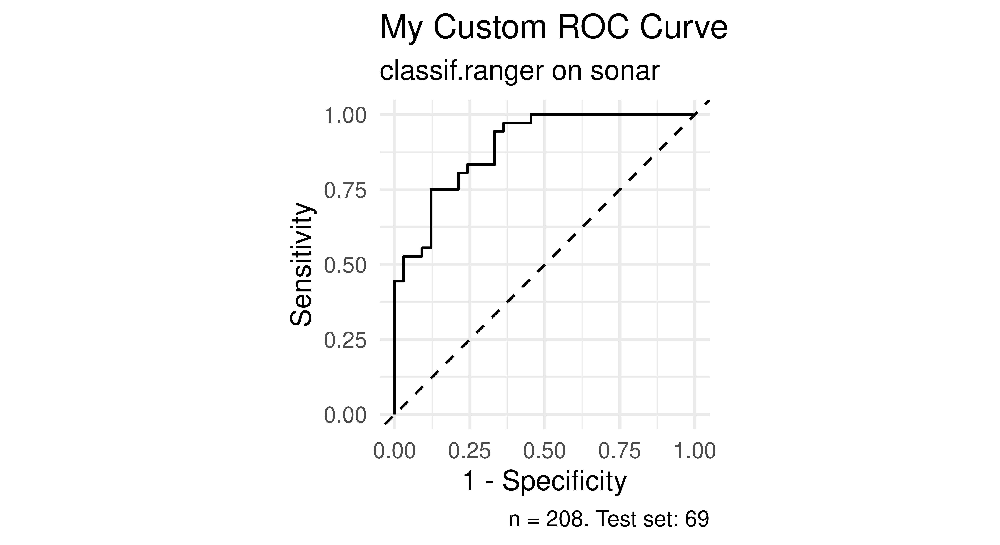
We can compare it with the pre-built plot function in mlr3viz:
learner$train(task, split$train)pred=learner$predict(task, split$test)autoplot(pred, type ="roc")
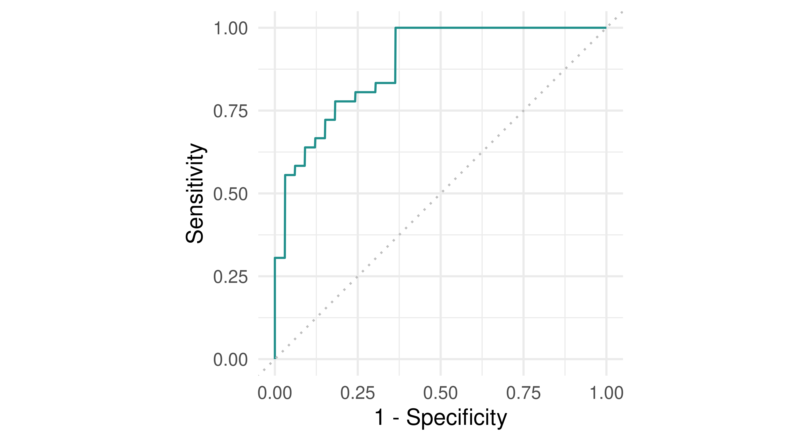
Note the slight discrepancy between the two curves. This is caused by some implementation differences used by the precrec which is used for this functionality in mlr3viz. There are different approaches to drawing ROC curves, and our implementation above is one of the simpler ones!
Tune the mtry, sample.fraction, and num.trees hyperparameters of lrn("regr.ranger") on tsk("mtcars"). Use a simple random search with 50 evaluations. Evaluate with a three-fold CV and the root mean squared error. Visualize the effects that each hyperparameter has on the performance via simple marginal plots, which plot a single hyperparameter versus the cross-validated MSE.
# incumbent plotautoplot(instance, type ="incumbent")
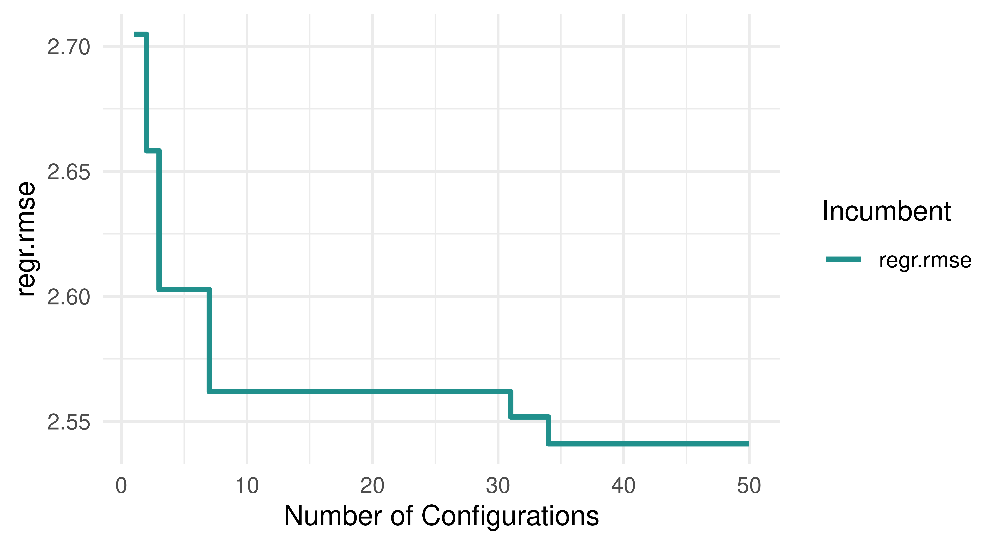
# marginal plotsautoplot(instance, type ="marginal", cols_x ="mtry")
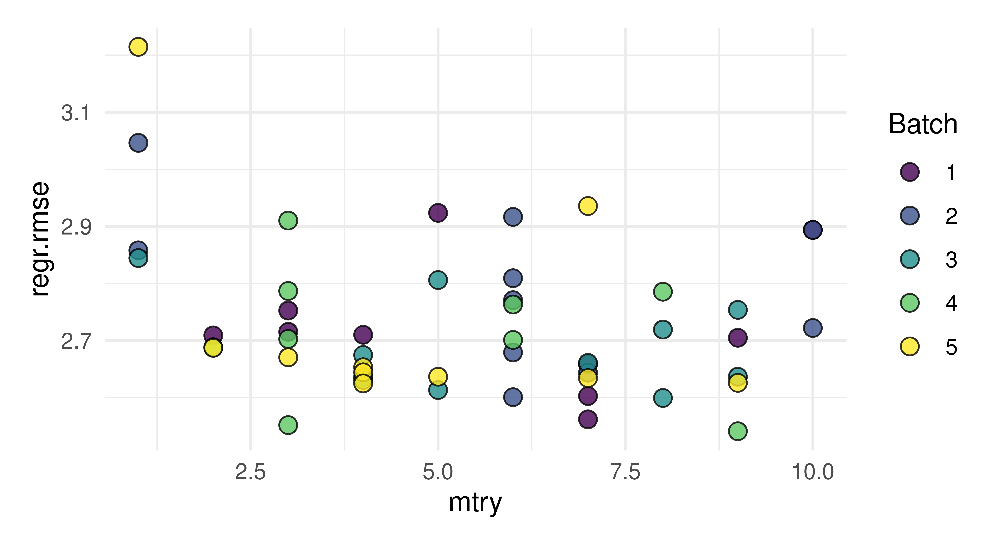
autoplot(instance, type ="marginal", cols_x ="sample.fraction")
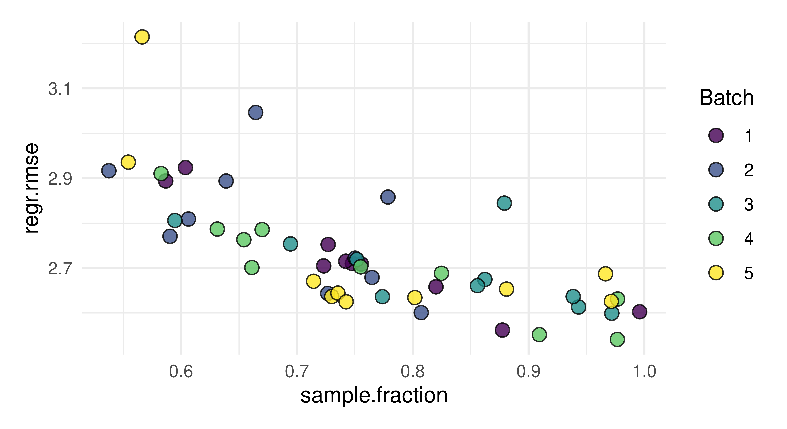
autoplot(instance, type ="marginal", cols_x ="num.trees")
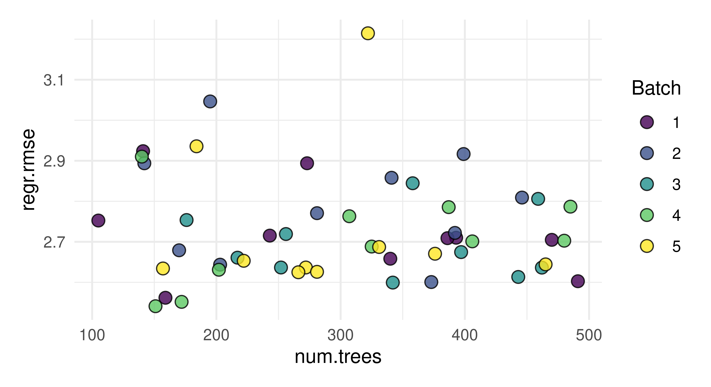
Evaluate the performance of the model created in Exercise 1 with nested resampling. Use a holdout validation for the inner resampling and a three-fold CV for the outer resampling.
The "rmse" is slightly higher than the one we obtained in Exercise 1. We see that the performance estimated while tuning overestimates the true performance
Tune and benchmark an XGBoost model against a logistic regression (without tuning the latter) and determine which has the best Brier score. Use mlr3tuningspaces and nested resampling, try to pick appropriate inner and outer resampling strategies that balance computational efficiency vs. stability of the results.
set.seed(1)task=tsk("sonar")lrn_log_reg=lrn("classif.log_reg", predict_type ="prob")# load xgboost learner with search spacelrn_xgboost=lts(lrn("classif.xgboost", predict_type ="prob"))# search space for xgboostlrn_xgboost$param_set$search_space()
We use the lts() function from the mlr3tuningspaces package to load the lrn("classif.xgboost") with a search space. The learner is wrapped in an auto_tuner(), which is then benchmarked against the lrn("classif.log_reg").
(*) Write a function that implements an iterated random search procedure that drills down on the optimal configuration by applying random search to iteratively smaller search spaces. Your function should have seven inputs: task, learner, search_space, resampling, measure, random_search_stages, and random_search_size. You should only worry about programming this for fully numeric and bounded search spaces that have no dependencies. In pseudo-code:
Create a random design of size random_search_size from the given search space and evaluate the learner on it.
Identify the best configuration.
Create a smaller search space around this best config, where you define the new range for each parameter as: new_range[i] = (best_conf[i] - 0.25 * current_range[i], best_conf[i] + 0.25*current_range[i]). Ensure that this new_range respects the initial bound of the original search_space by taking the max() of the new and old lower bound, and the min() of the new and the old upper bound (“clipping”).
Iterate the previous steps random_search_stages times and at the end return the best configuration you have ever evaluated.
As a stretch goal, look into mlr3tuning’s internal source code and turn your function into an R6 class inheriting from the TunerBatch class – test it out on a learner of your choice.
Tune the mtry, sample.fraction, and num.trees hyperparameters of lrn("regr.ranger") on tsk("mtcars") and evaluate this with a three-fold CV and the root mean squared error (same as Chapter 4, Exercise 1). Use tnr("mbo") with 50 evaluations. Compare this with the performance progress of a random search run from Chapter 4, Exercise 1. Plot the progress of performance over iterations and visualize the spatial distribution of the evaluated hyperparameter configurations for both algorithms.
We first construct the learner, task, resampling, measure and terminator and then the instance.
WARN [14:22:04.268] [mlr3] train: Stopped because hard maximum generation limit was hit.
WARN [14:22:09.877] [mlr3] train: Stopped because hard maximum generation limit was hit.
We then add relevant information to the archives of the instances so that we can combine their data and use this data for generating the desired plots.
instance_rs$archive$data[, iteration:=seq_len(.N)]instance_rs$archive$data[, best_rmse:=cummin(regr.rmse)]instance_rs$archive$data[, method:="Random Search"]instance_bo$archive$data[, iteration:=seq_len(.N)]instance_bo$archive$data[, best_rmse:=cummin(regr.rmse)]instance_bo$archive$data[, method:="BO"]plot_data=rbind(instance_rs$archive$data[, c("iteration", "best_rmse", "method")],instance_bo$archive$data[, c("iteration", "best_rmse", "method")])ggplot(aes(x =iteration, y =best_rmse, colour =method), data =plot_data)+geom_step()+scale_colour_manual(values =viridis(2, end =0.8))+labs(x ="Number of Configurations", y ="Best regr.rmse", colour ="Method")+theme_minimal()+theme(legend.position ="bottom")
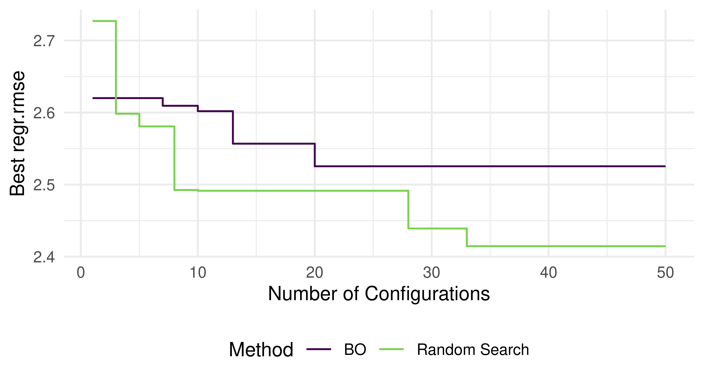
We see that BO manages to slightly outperform the random search. Ideally, we would replicate running both optimizers multiple times with different random seeds and visualize their average performance along with a dispersion measure to properly take randomness of the optimization process into account. We could even use the same first few random samples as the initial design in BO to allow for a fairer comparison.
To visualize the spatial distribution of the evaluated hyperparameter configurations we will plot for each evaluated configuration the number of trees on the x-axis and the sample fraction on the y-axis. The label of each point corresponds to the mtry parameter directly.
relevant_columns=c("mtry", "sample.fraction", "num.trees", "iteration", "method")plot_data_sampling=rbind(instance_rs$archive$data[, ..relevant_columns, with =FALSE],instance_bo$archive$data[, ..relevant_columns, with =FALSE])ggplot(aes(x =num.trees, y =sample.fraction, colour =method, label =mtry), data =plot_data_sampling)+scale_colour_manual(values =viridis(2, end =0.8))+geom_point(size =0)+geom_text()+guides(colour =guide_legend(title ="Method", override.aes =aes(label ="", size =2)))+theme_minimal()+theme(legend.position ="bottom")
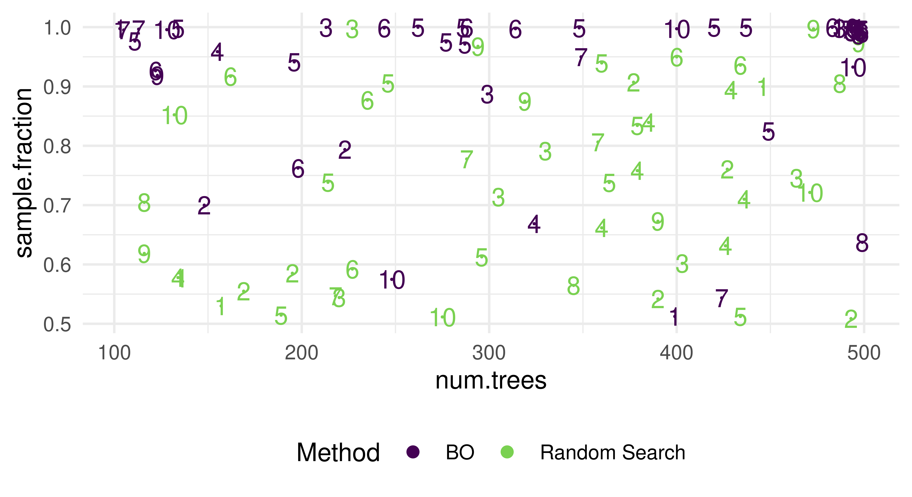
We observe that the random search samples uniformly at random – as expected. BO, however, focuses on regions of the search space with a high number of trees between 350 and 400, a high sample fraction and mtry values of around 5 to 8. This is also the region where the final result returned by BO is located. Nevertheless, BO also explores the search space, i.e., along the line of a high sample fraction close to 1.
Minimize the 2D Rastrigin function \(f: [-5.12, 5.12] \times [-5.12, 5.12] \rightarrow \mathbb{R}\), \(\mathbf{x} \mapsto 10 D+\sum_{i=1}^D\left[x_i^2-10 \cos \left(2 \pi x_i\right)\right]\), \(D = 2\) via BO (standard sequential single-objective BO via bayesopt_ego()) using the lower confidence bound with lambda = 1 as acquisition function and "NLOPT_GN_ORIG_DIRECT" via opt("nloptr") as acquisition function optimizer. Use a budget of 40 function evaluations. Run this with both the “default” Gaussian process surrogate model with Matérn 5/2 kernel, and the “default” random forest surrogate model. Compare their anytime performance (similarly as in Figure 5.7). You can construct the surrogate models with default settings using:
We first construct the function, making use of efficient evaluation operating on a data.table directly. We then wrap this function in the corresponding ObjectiveRFunDt objective class and construct the instance.
OptimInstanceSingleCrit is deprecated. Use OptimInstanceBatchSingleCrit instead.
We then construct the surrogates as well as the acquisition function and acquisition function optimizer (we will terminate the acquisition function optimization once optimization process stagnates by 1e-5 over the last 100 iterations) and construct the two BO optimizers.
We then combine the data and use it to generate the desired plot:
plot_data=rbind(gp_data, rf_data)ggplot(aes(x =iteration, y =y_min, colour =surrogate), data =plot_data)+geom_step()+scale_colour_manual(values =viridis(2, end =0.8))+labs(y ="Best Observed Function Value", x ="Number of Function Evaluations", colour ="Surrogate Model")+theme_minimal()+theme(legend.position ="bottom")
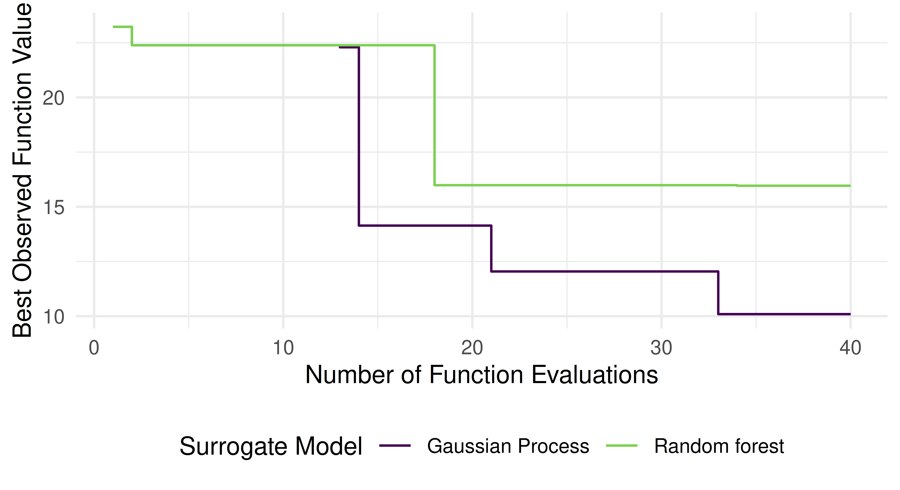
As expected, we observe that the BO algorithm with the Gaussian Process surrogate appears to outperform the random forest surrogate counterpart. However, ideally we would replicate running each algorithm using different random seeds and visualize the average performance along with some dispersion measure to properly take randomness of the optimization process into account.
Minimize the following function: \(f: [-10, 10] \rightarrow \mathbb{R}^2, x \mapsto \left(x^2, (x - 2)^2\right)\) with respect to both objectives. Use the ParEGO algorithm. Construct the objective function using the ObjectiveRFunMany class. Terminate the optimization after a runtime of 100 evals. Plot the resulting Pareto front and compare it to the analytical solution, \(y_2 = \left(\sqrt{y_1}-2\right)^2\) with \(y_1\) ranging from \(0\) to \(4\).
We first construct the function, wrap it in the objective and then create the instance.
fun=function(xss){evaluations=lapply(xss, FUN =function(xs){list(y1 =xs$x^2, y2 =(xs$x-2)^2)})rbindlist(evaluations)}objective=ObjectiveRFunMany$new( fun =fun, domain =ps(x =p_dbl(lower =-10, upper =10)), codomain =ps(y1 =p_dbl(tags ="minimize"), y2 =p_dbl(tags ="minimize")), id ="schaffer1")instance=OptimInstanceMultiCrit$new( objective =objective, terminator =trm("evals", n_evals =100))
OptimInstanceMultiCrit is deprecated. Use OptimInstanceBatchMultiCrit instead.
As a surrogate we will use a random forest. ParEGO is a scalarization based multi-objective BO algorithm and therefore we use the Expected Improvement as acquisition function. We will use the same acquisition functon optimizer as earlier.
WARN [14:33:03.083] [bbotk] Task 'surrogate_task' has missing values in column(s) 'y_scal', but learner 'regr.ranger' does not support this
WARN [14:33:03.085] [bbotk] Could not update the surrogate a final time after the optimization process has terminated.
Compute the correlation filter scores on tsk("mtcars") and use the filter to select the five features most strongly correlated with the target. Resample lrn("regr.kknn") on both the full dataset and the reduced one, and compare both performances based on 10-fold CV with respect to MSE. NB: Here, we have performed the feature filtering outside of CV, which is generally not a good idea as it biases the CV performance estimation. To do this properly, filtering should be embedded inside the CV via pipelines – try to come back to this exercise after you read Chapter 8 to implement this with less bias.
Apply backward selection to tsk("penguins") with lrn("classif.rpart") and holdout resampling by the classification accuracy measure. Compare the results with those in Section 6.2.1 by also running the forward selection from that section. Do the selected features differ? Which feature selection method reports a higher classification accuracy in its $result?
bill_depth bill_length body_mass flipper_length island sex year
1: TRUE TRUE FALSE TRUE FALSE FALSE FALSE
3 variable(s) not shown: [features, n_features, classif.acc]
The sequential backward search selects 5 features, while the sequential forward search selects all features. The sequential backward search reports a higher classification accuracy.
There is a problem in the performance comparison in Exercise 2 as feature selection is performed on the test-set. Change the process by applying forward feature selection with auto_fselector(). Compare the performance to backward feature selection from Exercise 2 using nested resampling.
Now the sequential forward search selects yields a slightly higher classification accuracy.
(*) Write a feature selection algorithm that is a hybrid of a filter and a wrapper method. This search algorithm should compute filter scores for all features and then perform a forward search. But instead of tentatively adding all remaining features to the current feature set, it should only stochastically try a subset of the available features. Features with high filter scores should be added with higher probability. Start by coding a stand-alone R method for this search (based on a learner, task, resampling, performance measure and some control settings).
library(mlr3verse)library(data.table)task=tsk("sonar")learner=lrn("classif.rpart")resampling=rsmp("cv", folds =3)measure=msr("classif.acc")filter=flt("auc")n=5max_features=10filter_forward_selection_search=function(task, learner, resampling, measure, filter, n, max_features){features=task$feature_names# calculate filter scoresfilter$calculate(task)scores=filter$scoresresult_features=character(0)while(max_features>length(result_features)){# select n features to tryfilter_features=sample(names(scores), size =min(n, length(scores)), prob =scores)# create feature matrixstates=matrix(FALSE, ncol =length(features), nrow =length(filter_features))# add filter features to matrixfor(iinseq_along(filter_features)){states[i, which(features%in%filter_features[i])]=TRUE}# add already selected features to matrixstates[, which(features%in%result_features)]=TRUE# convert matrix to designdesign=setnames(as.data.table(states), features)# evaluate feature combinationsinstance=fselect( fselector =fs("design_points", design =design, batch_size =nrow(design)), task =task, learner =learner, resampling =resampling, measure =measure)# current best setresult_features=instance$result_feature_set# remove selected features from scoresscores=scores[!names(scores)%in%result_features]}result_features}filter_forward_selection_search(task, learner, resampling, measure, filter, n, max_features)
The GraphLearner can be trained like any other Learner object, thereby filling in its $model field. It is possible to access the $state of any PipeOp through this field: the states are named after the PipeOp’s $id. The logistic regression model can then be extracted from the state of the po("learner") that contains the lrn("classif.log_reg").
graph_learner$train(tsk("pima"))# access the state of the po("learner") to get the modelmodel=graph_learner$model$classif.log_reg$modelcoef(model)
(Intercept) age glucose insulin mass pedigree
-0.88835 0.15584 1.13631 -0.17477 0.74383 0.32121
pregnant pressure triceps
0.39594 -0.24967 0.05599
Alternatively, the underlying lrn("classif.log_reg") can be accessed through the $base_learner() method:
(Intercept) age glucose insulin mass pedigree
-0.88835 0.15584 1.13631 -0.17477 0.74383 0.32121
pregnant pressure triceps
0.39594 -0.24967 0.05599
As a third option, the trained PipeOp can be accessed through the $graph_model field of the GraphLearner. The trained PipeOp has a $learner_model field, which contains the trained Learner object, which contains the model.
(Intercept) age glucose insulin mass pedigree
-0.88835 0.15584 1.13631 -0.17477 0.74383 0.32121
pregnant pressure triceps
0.39594 -0.24967 0.05599
Set the $keep_results flag of the Graph to TRUE to keep the results of the individual PipeOps. Afterwards, the input of the lrn("classif.log_reg") can be accessed through the $.result field of its predecessor, the po("scale"). Note that the $.result is a list, we want to access its only element, named $output.
graph_learner$graph$keep_results=TRUEgraph_learner$train(tsk("pima"))# access the input of the learnerscale_result=graph_learner$graph_model$pipeops$scale$.resultscale_output_task=scale_result$outputage_column=scale_output_task$data()$age# check if the age column is standardized:# 1. does it have mean 0? -- almost, up to numerical precision!mean(age_column)
[1] 1.988e-16
# 2. does it have standard deviation 1? -- yes!sd(age_column)
Use the po("pca") to replace numeric columns with their PCA transform. To restrict this operator to only columns without missing values, the affect_columns with a fitting Selector can be used: The selector_missing(), which selects columns with missing values, combined with selector_invert(), which inverts the selection. Since po("pca") only operates on numeric columns, it is not necessary to use a Selector to select numeric columns.
graph=as_graph(po("pca", affect_columns =selector_invert(selector_missing())))# apply the graph to the pima taskgraph_result=graph$train(tsk("pima"))# we get the following featuresgraph_result[[1]]$feature_names
Alternatively, po("select") can be used to select the columns without missing values that are passed to po("pca"). Another po("select") can be used to select all the other columns. It is put in parallel with the first po("select") using gunion(). It is necessary to use different $id values for both po("select") to avoid a name clash in the Graph. To combine the output from both paths, po("featureunion") can be used.
path1=po("select", id ="select_non_missing", selector =selector_invert(selector_missing()))%>>%po("pca")path2=po("select", id ="select_missing", selector =selector_missing())graph=gunion(list(path1, path2))%>>%po("featureunion")# apply the graph to the pima taskgraph_result=graph$train(tsk("pima"))graph_result[[1]]$feature_names
First, observe the feature names produced by the level 0 learners when applied to the tsk("wine") task:
lrn_rpart=lrn("classif.rpart", predict_type ="prob")po_rpart_cv=po("learner_cv", learner =lrn_rpart, resampling.folds =2, id ="rpart_cv")lrn_knn=lrn("classif.kknn", predict_type ="prob")po_knn_cv=po("learner_cv", learner =lrn_knn, resampling.folds =2, id ="knn_cv")# we restrict ourselves to two level 0 learners here to# focus on the essentials.gr_level_0=gunion(list(po_rpart_cv, po_knn_cv))gr_combined=gr_level_0%>>%po("featureunion")gr_combined$train(tsk("wine"))[[1]]$head()
To use po("select") to remove, instead of keep, a feature based on a pattern, use selector_invert together with selector_grep. To remove the “1” class columns, i.e. all columns with names that end in “1”, the following po("select") could be used:
drop_one=po("select", selector =selector_invert(selector_grep("\\.1$")))# Train it on the wine task with lrn("classif.multinom"):gr_stack=gr_combined%>>%drop_one%>>%lrn("classif.multinom", trace =FALSE)glrn_stack=as_learner(gr_stack)glrn_stack$train(tsk("wine"))glrn_stack$base_learner()$model
Using this selector in Section 8.3.2, one could use the resulting stacking learner on any classification task with arbitrary target classes. It can be used as an alternative to the Selector used in exercise 2:
drop_one_alt=po("select", selector =selector_remove_one_prob_column)# The same as above:gr_stack=gr_combined%>>%drop_one_alt%>>%lrn("classif.multinom", trace =FALSE)glrn_stack=as_learner(gr_stack)glrn_stack$train(tsk("wine"))# As before, the first class was dropped.glrn_stack$base_learner()$model
We choose to use the following options for imputation, factor encoding, and model training. Note the use of pos() and lrns(), which return lists of PipeOp and Learner objects, respectively.
Use the ppl("branch") pipeline to get Graphs with alternative path branching, controlled by its own hyperparameter. We need to give the po("branch") operators that are created here individual prefixes to avoid nameclashes when we put everything together.
The easiest way to set up the search space for this pipeline is to use to_tune(). It is necessary to record the dependencies of the hyperparameters of the preprocessing and model PipeOps on the branch hyperparameters. For this, to_tune() needs to be applied to a Domain object – p_dbl(), p_fct(), etc. – that has its dependency declared using the depends argument.
We also set a few SVM kernel hyperparameters record their dependency on the model selection branch hyperparameter. We could record these dependencies in the Graph, using the $add_dep() method of the ParamSet, but here we use the simpler approach of adding a single item search space component.
The AutoTuner performs better than the untuned random forest on one task. This is, of course, a toy example to demonstrate the capabilities of mlr3pipelines in combination with the mlr3tuning package. To use this kind of setup on real world data, one would need to take care of making the process more robust, e.g. by using the ppl("robustify") pipeline, and by using fallback learners.
We will consider a prediction problem similar to the one from this chapter, but using the King County Housing regression data instead (available with tsk("kc_housing")). To evaluate the models, we again use 10-fold CV, mean absolute error and lrn("regr.glmnet"). For now we will ignore the date column and simply remove it:
Have a look at the features, are there any features which might be problematic? If so, change or remove them. Check the dataset and learner properties to understand which preprocessing steps you need to do.
price bathrooms bedrooms condition
Min. : 75000 Min. :0.00 Min. : 0.00 Min. :1.00
1st Qu.: 321950 1st Qu.:1.75 1st Qu.: 3.00 1st Qu.:3.00
Median : 450000 Median :2.25 Median : 3.00 Median :3.00
Mean : 540088 Mean :2.12 Mean : 3.37 Mean :3.41
3rd Qu.: 645000 3rd Qu.:2.50 3rd Qu.: 4.00 3rd Qu.:4.00
Max. :7700000 Max. :8.00 Max. :33.00 Max. :5.00
floors grade lat long
Min. :1.00 Min. : 1.00 Min. :47.2 Min. :-123
1st Qu.:1.00 1st Qu.: 7.00 1st Qu.:47.5 1st Qu.:-122
Median :1.50 Median : 7.00 Median :47.6 Median :-122
Mean :1.49 Mean : 7.66 Mean :47.6 Mean :-122
3rd Qu.:2.00 3rd Qu.: 8.00 3rd Qu.:47.7 3rd Qu.:-122
Max. :3.50 Max. :13.00 Max. :47.8 Max. :-121
sqft_above sqft_basement sqft_living sqft_living15
Min. : 290 Min. : 10 Min. : 290 Min. : 399
1st Qu.:1190 1st Qu.: 450 1st Qu.: 1427 1st Qu.:1490
Median :1560 Median : 700 Median : 1910 Median :1840
Mean :1788 Mean : 742 Mean : 2080 Mean :1987
3rd Qu.:2210 3rd Qu.: 980 3rd Qu.: 2550 3rd Qu.:2360
Max. :9410 Max. :4820 Max. :13540 Max. :6210
NA's :13126
sqft_lot sqft_lot15 view waterfront
Min. : 520 Min. : 651 Min. :0.000 Mode :logical
1st Qu.: 5040 1st Qu.: 5100 1st Qu.:0.000 FALSE:21450
Median : 7618 Median : 7620 Median :0.000 TRUE :163
Mean : 15107 Mean : 12768 Mean :0.234
3rd Qu.: 10688 3rd Qu.: 10083 3rd Qu.:0.000
Max. :1651359 Max. :871200 Max. :4.000
yr_built yr_renovated zipcode
Min. :1900 Min. :1934 Min. :98001
1st Qu.:1951 1st Qu.:1987 1st Qu.:98033
Median :1975 Median :2000 Median :98065
Mean :1971 Mean :1996 Mean :98078
3rd Qu.:1997 3rd Qu.:2007 3rd Qu.:98118
Max. :2015 Max. :2015 Max. :98199
NA's :20699
The zipcode should not be interpreted as a numeric value, so we cast it to a factor. We could argue to remove lat and long as handling them as linear effects is not necessarily a suitable, but we will keep them since glmnet performs internal feature selection anyways.
zipencode=po("mutate", mutation =list(zipcode =~as.factor(zipcode)), id ="zipencode")
Build a suitable pipeline that allows glmnet to be trained on the dataset. Construct a new glmnet model with ppl("robustify"). Compare the two pipelines in a benchmark experiment.
graph_preproc=zipencode%>>%po("fixfactors")%>>%po("encodeimpact")%>>%list(po("missind", type ="integer", affect_columns =selector_type("integer")),po("imputehist", affect_columns =selector_type("integer")))%>>%po("featureunion")%>>%po("imputeoor", affect_columns =selector_type("factor"))%>>%lrn_glmnetgraph_preproc$plot()
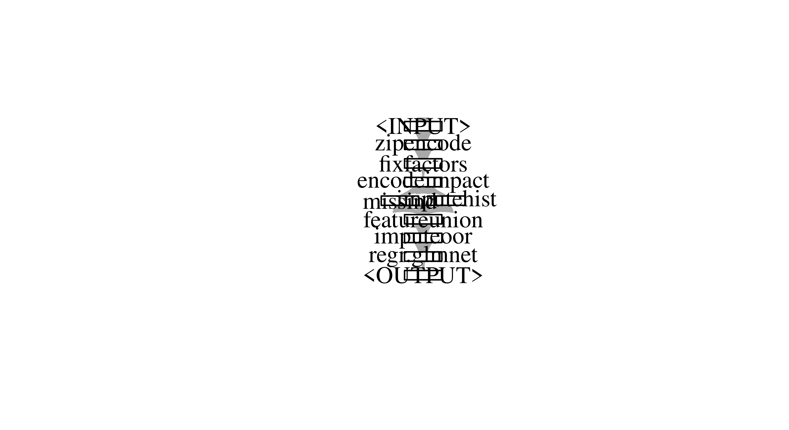
glmnet does not support factors or missing values. So our pipeline needs to handle both. First we fix the factor levels to ensure that all 70 zipcodes are fixed. We can consider 70 levels high cardinality, so we use impact encoding. We use the same imputation strategy as in Chapter 9.
glrn_preproc=as_learner(graph_preproc, id ="glmnet_preproc")glrn_robustify=as_learner(graph_robustify, id ="glmnet_robustify")design=benchmark_grid( tasks =task, learners =list(glrn_preproc, glrn_robustify), resamplings =rsmp("cv", folds =3))bmr=benchmark(design)
Warning: Multiple lambdas have been fit. Lambda will be set to 0.01 (see parameter 's').
This happened PipeOp regr.glmnet's $predict()
Warning: Multiple lambdas have been fit. Lambda will be set to 0.01 (see parameter 's').
This happened PipeOp regr.glmnet's $predict()
Warning: Multiple lambdas have been fit. Lambda will be set to 0.01 (see parameter 's').
This happened PipeOp regr.glmnet's $predict()
Warning: Multiple lambdas have been fit. Lambda will be set to 0.01 (see parameter 's').
This happened PipeOp regr.glmnet's $predict()
Warning: Multiple lambdas have been fit. Lambda will be set to 0.01 (see parameter 's').
This happened PipeOp regr.glmnet's $predict()
Warning: Multiple lambdas have been fit. Lambda will be set to 0.01 (see parameter 's').
This happened PipeOp regr.glmnet's $predict()
nr task_id
1: 1 kc_housing
2: 2 kc_housing
4 variable(s) not shown: [learner_id, resampling_id, iters, regr.rmse]
Hidden columns: resample_result
Our preprocessing pipeline performs slightly better than the robustified one.
Now consider the date feature: How can you extract information from this feature in a way that glmnet can use? Does this improve the performance of your pipeline? Finally, consider the spatial nature of the dataset. Can you extract an additional feature from the lat / long coordinates? (Hint: Downtown Seattle has lat/long coordinates 47.605/122.334).
We simply convert the date feature into a numeric timestamp so that glmnet can handle the feature. We create one additional feature as the distance to downtown Seattle. This improves the average error of our model by a further 1400$.
Consider the following example where you resample a learner (debug learner, sleeps for 3 seconds during $train()) on 4 workers using the multisession backend:
Assuming that the learner would actually calculate something and not just sleep: Would all CPUs be busy?
Prove your point by measuring the elapsed time, e.g., using system.time().
What would you change in the setup and why?
Not all CPUs would be utilized for the whole duration. All 4 of them are occupied for the first 4 iterations of the cross-validation. The 5th iteration, however, only runs in parallel to the 6th fold, leaving 2 cores idle. This is supported by the elapsed time of roughly 6 seconds for 6 jobs compared to also roughly 6 seconds for 8 jobs:
If possible, the number of resampling iterations should be an integer multiple of the number of workers. Therefore, a simple adaptation either increases the number of folds for improved accuracy of the error estimate or reduces the number of folds for improved runtime.
Create a new custom binary classification measure which scores (“prob”-type) predictions. This measure should compute the absolute difference between the predicted probability for the positive class and a 0-1 encoding of the ground truth and then average these values across the test set. Test this with classif.log_reg on tsk("sonar").
The rules can easily be translated to R code where we first convert select the predicted probabilities for the positive class, 0-1 encode the truth vector and then calculate the mean absolute error between the two vectors.
mae_prob=function(truth, prob, task){# retrieve positive class from taskpositive=task$positive# select positive class probabilitiesprob_positive=prob[, positive]# obtain 0-1 encoding of truthy=as.integer(truth==positive)# average the absolute differencemean(abs(prob_positive-y))}
This function can be embedded in the Measure class accordingly.
MeasureMaeProb=R6::R6Class("MeasureMaeProb", inherit =mlr3::MeasureClassif, # classification measure public =list( initialize =function(){# initialize classsuper$initialize(# initialize method of parent class id ="mae_prob", # unique ID packages =character(), # no dependencies properties ="requires_task", # needs access to task for positive class predict_type ="prob", # measures probability prediction range =c(0, 1), # results in values between [0, 1] minimize =TRUE# smaller values are better)}), private =list( .score =function(prediction, task, ...){# define score as private method# call loss functionmae_prob(prediction$truth, prediction$prob, task)}))
Because this is a custom class that is not available in the mlr_measures dictionary, we have to create a new instance using the $new() constructor.
To try this measure, we resample a logistic regression on the sonar task using five-fold cross-validation.
# predict_type is set to "prob", as otherwise our measure does not worklearner=lrn("classif.log_reg", predict_type ="prob")task=tsk("sonar")rr=resample(task, learner, rsmp("cv", folds =5))
Warning: glm.fit: algorithm did not converge
Warning: glm.fit: fitted probabilities numerically 0 or 1 occurred
Warning: glm.fit: algorithm did not converge
Warning: glm.fit: fitted probabilities numerically 0 or 1 occurred
Warning: glm.fit: algorithm did not converge
Warning: glm.fit: fitted probabilities numerically 0 or 1 occurred
Warning: glm.fit: algorithm did not converge
Warning: glm.fit: fitted probabilities numerically 0 or 1 occurred
Warning: glm.fit: algorithm did not converge
Warning: glm.fit: fitted probabilities numerically 0 or 1 occurred
We now score the resample result using our custom measure and msr("classif.acc").
In this case, there is a clear relationship between the classification accuracy and our custom measure, i.e. the higher the accuracy, the lower the mean absolute error of the predicted probabilities.
“Tune” the error_train hyperparameter of the classif.debug learner on a continuous interval from 0 to 1, using a simple classification tree as the fallback learner and the penguins task. Tune for 50 iterations using random search and 10-fold cross-validation. Inspect the resulting archive and find out which evaluations resulted in an error, and which did not. Now do the same in the interval 0.3 to 0.7. Are your results surprising?
First, we create the learner that we want to tune, mark the relevant parameter for tuning and set the fallback learner to a classification tree.
This example is unusual, because we expect better results from the fallback classification tree than from the primary debug learner, which predicts the mode of the target distribution. Nonetheless it serves as a good example to illustrate the effects of training errors on the tuning results.
We proceed with optimizing the classification accuracy of the learner on the penguins task.
To find out which evaluations resulted in an error, we can inspect the $archive slot of the instance, which we convert to a data.table for easier filtering.
Higher values for error_train lead to more resampling iterations using the classification tree fallback learner and therefore to better classification accuracies. Therefore, the best found hyperparameter configurations will tend to have values of error_train close to 1. When multiple parameter configurations have the same test performance, the first one is chosen by $result_learner_param_vals.
instance$result_learner_param_vals
$error_train
[1] 0.9832
We repeat the same experiment for the tuning interval from 0.3 to 0.7.
However, the best found configurations for the error_train parameter, now tend to be close to 0.7 instead of 1 as before.
instance2$result_learner_param_vals
$error_train
[1] 0.5705
This demonstrates that when utilizing a fallback learner, the tuning results are influenced not only by the direct impact of the tuning parameters on the primary learner but also by their effect on its error probability. Therefore, it is always advisable to manually inspect the tuning results afterward. Note that in most real-world scenarios, the fallback learner performs worse than the primary learner, and thus the effects illustrated here are usually reversed.
Load the OpenML collection with ID 269, which contains regression tasks from the AutoML benchmark (Gijsbers et al. 2022). Peek into this suite to study the contained data sets and their characteristics. Then find all tasks with less than 4000 observations and convert them to mlr3 tasks.
We access the AutoML benchmark suite with ID 269 using the ocl() function.
<TaskRegr:Moneyball> (1232 x 15)
* Target: RS
* Properties: -
* Features (14):
- fct (6): G, League, Playoffs, RankPlayoffs, RankSeason, Team
- dbl (5): BA, OBP, OOBP, OSLG, SLG
- int (3): RA, W, Year
Create an experimental design that compares lrn("regr.ranger") and lrn("regr.rpart") on those tasks. Use the robustify pipeline for both learners and a featureless fallback learner. You can use three-fold CV instead of the OpenML resamplings to save time. Run the comparison experiments with batchtools. Use default hyperparameter settings and do not perform any tuning to keep the experiments simple.
To execute this benchmark design using mlr3batchmark we start by creating and configuring an experiment registry. We set file.dir = NA to use a temporary directory for the registry.
Created registry in '/tmp/RtmpEYidqa/registry1e27644d46aec' using cluster functions 'Interactive'
The next two steps are to populate the registry with the experiments using batchmark() and to submit them. By specifying no IDs in submitJobs(), all jobs returned by findNotSubmitted() are queued, which in this case are all existing jobs.
Below, we conduct a global Friedman test. Note that a post-hoc test is not needed because we are only comparing two algorithms.
bma$friedman_test()
Friedman rank sum test
data: mse and learner_id and task_id
Friedman chi-squared = 1.6, df = 1, p-value = 0.2
This experimental design was not able to detect a significant difference on the 5% level so we cannot reject our null hypothesis that the regression tree performs equally well as the random forest.
Prepare a mlr3 regression task for fifa data. Select only variables describing the age and skills of footballers. Train any predictive model for this task, e.g. lrn("regr.ranger").
Ranger result
Call:
ranger::ranger(dependent.variable.name = task$target_names, data = task$data(), case.weights = task$weights$weight, num.threads = 1L)
Type: Regression
Number of trees: 500
Sample size: 5000
Number of independent variables: 6
Mtry: 2
Target node size: 5
Variable importance mode: none
Splitrule: variance
OOB prediction error (MSE): 3.404e+13
R squared (OOB): 0.5671
Use the permutation importance method to calculate feature importance ranking. Which feature is the most important? Do you find the results surprising?
With iml
library(iml)model=Predictor$new(learner, data =fifa20, y ="value_eur")effect=FeatureImp$new(model, loss ="rmse")effect$plot()
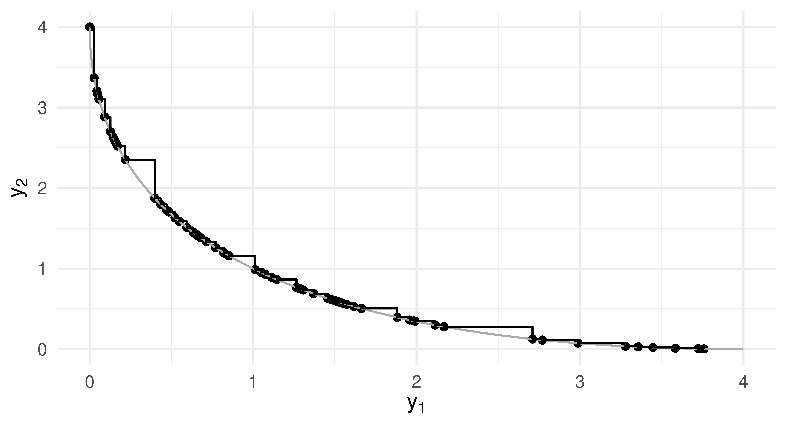
With DALEX
library(DALEX)ranger_exp=DALEX::explain(learner, data =fifa20[, setdiff(names(fifa20), "value_eur")], y =fifa$value_eur, label ="Fifa 2020", verbose =FALSE)ranger_effect=model_parts(ranger_exp, B =5)head(ranger_effect)
variable mean_dropout_loss label
1 _full_model_ 2897186 Fifa 2020
2 age 4658209 Fifa 2020
3 skill_curve 4842955 Fifa 2020
4 skill_fk_accuracy 5167775 Fifa 2020
5 skill_dribbling 5747754 Fifa 2020
6 skill_long_passing 5947734 Fifa 2020
Choose Robert Lewandowski as a specific example and calculate and plot the Shapley values. Which feature is locally the most important and has the strongest influence on his valuation as a soccer player?
Run a benchmark experiment on tsk("german_credit") with lrn("classif.featureless"), lrn("classif.log_reg"), and lrn("classif.ranger"). Tune the prediction thresholds of all learners by encapsulating them in a po("learner_cv") (with two-fold CV), followed by a po("tunethreshold"). Use msr("classif.costs", costs = costs), where the costs matrix is as follows: true positive is -10, true negative is -1, false positive is 2, and false negative is 3. Use this measure in po("tunethreshold") and when evaluating your benchmark experiment.
Truth
Predicted Credit good bad
good -10 2
bad 3 -1
Our cost matrix is as expected so we can plug it into our measure and setup our pipeline.
# Create measuremeas_costs=msr("classif.costs", costs =costs)# Create a function to wrap learners in internal cross-validation# to tune the thresholdpipe=function(l){po("learner_cv", l, resampling.folds =2)%>>%po("tunethreshold", measure =meas_costs)}# Benchmarklearners=lapply(learners, pipe)design=benchmark_grid(tsk_german, learners, rsmp("holdout"))bmr=benchmark(design)$aggregate(meas_costs)
OptimInstanceSingleCrit is deprecated. Use OptimInstanceBatchSingleCrit instead.
OptimInstanceSingleCrit is deprecated. Use OptimInstanceBatchSingleCrit instead.
OptimInstanceSingleCrit is deprecated. Use OptimInstanceBatchSingleCrit instead.
Based on these results, the logistic regression performs the best with the greatest increase to costs, however the difference is only marginal compared to the other learners.
Train and test a survival forest using lrn("surv.rfsrc") (from mlr3extralearners). Run this experiment using tsk("rats") and partition(). Evaluate your model with the RCLL measure.
# Get learnerslibrary(mlr3extralearners)# Get survival modelslibrary(mlr3proba)set.seed(1)# Use partition to split data and test our modeltsk_rats=tsk("rats")splits=partition(tsk_rats)learner=lrn("surv.rfsrc")prediction=learner$train(tsk_rats, splits$train)$predict(tsk_rats, splits$test)prediction$score(msr("surv.rcll"))
surv.rcll
2.726
The right-censored logloss provides a measure of predictive accuracy, but it is quite hard to interpret it without comparison to another model. To yield a more informative value, we could either compute the RCLL for an uninformed baseline like the Kaplan-Meier estimator, or we could use the ERV (explained residual variation) parameter in the measure, which returns the RCLL as a percentage increase in performance compared to an uninformed baseline (in this case the Kaplan-Meier estimator):
Now we can see that our model is only marginally better than the Kaplan-Meier baseline (a 2% performance increase).
Estimate the density of the “precip” task from the mlr3proba package using lrn("dens.hist"), evaluate your estimation with the logloss measure. As a stretch goal, look into the documentation of distr6 to learn how to analyse your estimated distribution further.
# Get density modelslibrary(mlr3proba)set.seed(1)# Run experimenttsk_precip=tsk("precip")learner=lrn("dens.hist")prediction=learner$train(tsk_precip)$predict(tsk_precip)prediction
As before the logloss is not too informative by itself but as the Histogram is itself a baseline, we can use this value for comparison to more sophisticated models. To learn more about our predicted distribution, we could use distr6 to summarise the distribution and to compute values such as the pdf and cdf:
Run a benchmark clustering experiment on the “wine” dataset without a label column. Compare the performance of k-means learner with k equal to 2, 3 and 4 using the silhouette measure and the insample resampling technique. What value of k would you choose based on the silhouette scores?
set.seed(1)# Load clustering models and taskslibrary(mlr3cluster)# Create the clustering dataset by extracting only the features from the# wine tasktsk_wine=tsk("wine")tsk_wine=as_task_clust(tsk_wine$data(cols =tsk_wine$feature_names))# Create learners and ensure they have unique IDslearners=c(lrn("clust.kmeans", centers =2, id ="K=2"),lrn("clust.kmeans", centers =3, id ="K=3"),lrn("clust.kmeans", centers =4, id ="K=4"))# Benchmarkmeas=msr("clust.silhouette")design=benchmark_grid(tsk_wine, learners, rsmp("insample"))benchmark(design)$aggregate(meas)[, .(learner_id, clust.silhouette)]
Train a model of your choice on tsk("adult_train") and test it on tsk("adult_test"), use any measure of your choice to evaluate your predictions. Assume our goal is to achieve parity in false omission rates across the protected ‘sex’ attribute. Construct a fairness metric that encodes this and evaluate your model. To get a deeper understanding, look at the groupwise_metrics function to obtain performance in each group.
For now we simply load the data and look at the data.
The false omission rate parity metric is available via the key "fairness.fomr". Note, that evaluating our prediction now requires that we also provide the task.
In addition, we can look at false omission rates in each group. The groupwise_metrics function creates a metric for each group specified in the pta column role:
tsk_adult_test$col_roles$pta
[1] "sex"
We can then use this metric to evaluate our model again. This gives us the false omission rates for male and female individuals separately.
Improve your model by employing pipelines that use pre- or post-processing methods for fairness. Evaluate your model along the two metrics and visualize the resulting metrics. Compare the different models using an appropriate visualization.
We do not improve in the false omission rate by using fairness interventions. One reason might be, that the interventions chosen do not optimize for the false omission rate, but other metrics, e.g. equalized odds.
The spread between the different cross-validation iterations (small dots) is quite large, estimates might come with a considerable error.
Add “race” as a second sensitive attribute to your dataset. Add the information to your task and evaluate the initial model again. What changes? Again study the groupwise_metrics.
This can be achieved by adding “race” to the "pta" col_role.
Evaluating for the intersection, we obtain a large deviation from 0. Note, that the metric by default computes the maximum discrepancy between all metrics for the non-binary case.
If we now compute the groupwise_metrics, we will get a metric for the intersection of each group.
subgroup.fomr_Male, White
0.2402
subgroup.fomr_Male, Black
0.2716
subgroup.fomr_Female, Black
0.2609
subgroup.fomr_Female, White
0.1919
subgroup.fomr_Male, Asian-Pac-Islander
0.3168
subgroup.fomr_Male, Amer-Indian-Eskimo
0.1667
subgroup.fomr_Female, Other
0.2500
subgroup.fomr_Female, Asian-Pac-Islander
0.3529
subgroup.fomr_Female, Amer-Indian-Eskimo
1.0000
subgroup.fomr_Male, Other
0.1111
And we can see, that the reason might be, that the false omission rate for female Amer-Indian-Eskimo is at 1.0!
In this chapter we were unable to reduce bias in our experiment. Using everything you have learned in this book, see if you can successfully reduce bias in your model. Critically reflect on this exercise, why might this be a bad idea?
Several problems with the existing metrics.
We’ll go through them one by one to deepen our understanding:
Metric and evaluation
In order for the fairness metric to be useful, we need to ensure that the data used for evaluation is representative and sufficiently large.
We can investigate this further by looking at actual counts:
, , target = <=50K
sex
race Female Male
Amer-Indian-Eskimo 56 74
Asian-Pac-Islander 131 186
Black 654 619
Other 37 66
White 3544 6176
, , target = >50K
sex
race Female Male
Amer-Indian-Eskimo 3 16
Asian-Pac-Islander 26 106
Black 41 133
Other 5 19
White 492 2931
One of the reasons might be that there are only 3 individuals in the “>50k” category! This is an often encountered problem, as error metrics have a large variance when samples are small. Note, that the pre- and post-processing methods in general do not all support multiple protected attributes.
We should question whether comparing the metric between all groups actually makes sense for the question we are trying to answer. Instead, we might want to observe the metric between two specific subgroups, in this case between individuals with sex: Female and race: "Black" or "White.
First, we create a subset of only sex: Female and race: "Black", "White.
subgroup.fomr_Male, White
0.2402
subgroup.fomr_Male, Black
0.2716
subgroup.fomr_Female, Black
0.2609
subgroup.fomr_Female, White
0.1919
subgroup.fomr_Male, Asian-Pac-Islander
0.3168
subgroup.fomr_Male, Amer-Indian-Eskimo
0.1667
subgroup.fomr_Female, Other
0.2500
subgroup.fomr_Female, Asian-Pac-Islander
0.3529
subgroup.fomr_Female, Amer-Indian-Eskimo
1.0000
subgroup.fomr_Male, Other
0.1111
We can see, that between women there is an even bigger discrepancy compared to men.
The bias mitigation strategies we employed do not optimize for the false omission rate metric, but other metrics instead. It might therefore be better to try to achieve fairness via other strategies, using different or more powerful models or tuning hyperparameters.
Manually $train() a LightGBM classifier from mlr3extralearners on the pima task using \(1/3\) of the training data for validation. As the pima task has missing values, select a method from mlr3pipelines to impute them. Explicitly set the evaluation metric to logloss ("binary_logloss"), the maximum number of boosting iterations to 1000, the patience parameter to 10, and the step size to 0.01. After training the learner, inspect the final validation scores as well as the early stopped number of iterations.
We start by loading the packages and creating the task.
After constructing the graphlearner, we now configure the validation data using set_validate(). The call below sets the $validate field of the LightGBM pipeop to "predefined" and of the graphlearner to 0.3. Recall that only the graphlearner itself can specify how the validation data is generated. The individual pipeops can either use it ("predefined") or not (NULL).
Finally, we train the learner and inspect the validation scores and internally tuned parameters.
glrn$train(tsk_pima)glrn$internal_tuned_values
$classif.lightgbm.num_iterations
[1] 183
glrn$internal_valid_scores
$classif.lightgbm.binary_logloss
[1] 0.4782
Wrap the learner from exercise 1) in an AutoTuner using a three-fold CV for the tuning. Also change the rule for aggregating the different boosting iterations from averaging to taking the maximum across the folds. Don’t tune any parameters other than nrounds, which can be done using tnr("internal"). Use the internal validation metric as the tuning measure. Compare this learner with a lrn("classif.rpart") using a 10-fold outer cross-validation with respect to classification accuracy.
We start by setting the number of boosting iterations to an internal tune token where the maximum number of boosting iterations is 1000 and the aggregation function the maximum. Note that the input to the aggregation function is a list of integer values (the early stopped values for the different resampling iterations), so we need to unlist() it first before taking the maximum.
Next, we create the autotuner using the configuration given in the instructions. As the internal validation measures are calculated by lightgbm and not mlr3, we need to specify whether the metric should be minimized.
branch_lrn=as_learner(ppl("branch", list(lrn("classif.ranger"),lrn("classif.xgboost", early_stopping_rounds =10, eval_metric ="error", eta =to_tune(0.001, 0.1, logscale =TRUE), nrounds =to_tune(upper =1000, internal =TRUE)))))set_validate(branch_lrn, validate ="test", ids ="classif.xgboost")branch_lrn$param_set$set_values(branch.selection =to_tune())at=auto_tuner( tuner =tnr("grid_search"), learner =branch_lrn, resampling =rsmp("holdout", ratio =0.8),# cannot use internal validation score because ranger does not have one measure =msr("classif.ce"), term_evals =10L, store_models =TRUE)tsk_sonar=tsk("sonar")$filter(1:100)rr=resample(tsk_sonar, at, rsmp("holdout", ratio =0.8), store_models =TRUE)
Answer the following questions (ideally without running the code):
3.1 During the hyperparameter optimization, how many observations are used to train the XGBoost algorithm (excluding validation data) and how many for the random forest? Hint: learners that cannot make use of validation data ignore it.
The outer resampling already removes 20 observations from the data (the outer test set), leaving only 80 data points (the outer train set) for the inner resampling. Then 16 (0.2 * 80; the test set of the inner holdout resampling) observations are used to evaluate the hyperparameter configurations. This leaves 64 (80 - 16) observations for training. For XGBoost, the 16 observations that make up the inner test set are also used for validation, so no more observations from the 64 training points are removed. Because the random forest does not support validation, the 16 observations from the inner test set will only be used for evaluation the hyperparameter configuration, but not simultanteously for internal validation. Therefore, both the random forest and XGBoost models use 64 observations for training.
3.2 How many observations would be used to train the final model if XGBoost was selected? What if the random forest was chosen?
In both cases, all 80 observations (the train set from the outer resampling) would be used. This is because during the final model fit no validation data is generated.
3.3 How would the answers to the last two questions change if we had set the $validate field of the graphlearner to 0.25 instead of "test"?
In this case, the validation data is no longer identical to the inner resampling test set. Instead, it is split from the 64 observations that make up the inner training set. Because this happens before the task enters the graphlearner, both the XGBoost model and the random forest only have access to 48 ((1 - 0.25) * 64) observations, and the remaining 16 are used to create the validation data. Note that the random forest will again ignore the validation data as it does not have the ‘validation’ property and therefore cannot use it. Also, the autotuner would now use a different set for tuning the step size and boosting iterations (which coincidentally both have size 16). Therefore, the answer to question 3.1 would be 48 instead of 64.
However, this does not change the answer to 3.2, as, again, no validation is performed during the final model fit.
Note that we would normally recommend setting the validation data to "test" when tuning, so this should be thought of as a illustrative example.
Error: Validate field of PipeOp 'classif.xgboost' must either be NULL or 'predefined'.
To configure how the validation data is created, set the $validate field of the GraphLearner, e.g. using set_validate().
Can you explain why the code fails? Hint: Should the data that xgboost uses for validation be preprocessed according to the train or predict logic?
If we set the $validate field of the XGBoost classifier to 0.3, the validation data would be generated from the output task of PipeOpOpPCA. However, this task has been exclusively preprocessed using the train logic, because the PipeOpPCA does not ‘know’ that the LightGBM classifier wants to do validation. Because validation performance is intended to measure how well a model would perform during prediction, the validation should be preprocessed according to the predict logic. For this reason, splitting of the 30% of the output from PipeOpPCA to use as validation data in the XGBoost classifier would be invalid. Therefore, it is not possible to set the $validate field of PipeOps to values other than predefined' orNULL’. Only the GraphLearner itself can dictate how the validation data is created before it enters the Graph, so the validation data is then preprocessed according to the predict logic.
Gijsbers, Pieter, Marcos L. P. Bueno, Stefan Coors, Erin LeDell, Sébastien Poirier, Janek Thomas, Bernd Bischl, and Joaquin Vanschoren. 2022. “AMLB: An AutoML Benchmark.” arXiv. https://doi.org/10.48550/ARXIV.2207.12560.
Source Code
---aliases: - "/solutions.html"---# Solutions to exercises {#sec-solutions}::: {.content-visible when-format="html"}{{< include ../../common/_setup.qmd >}}<!-- ENSURE ONLINE ONLY AND REFERENCE IN PREFACE -->## Solutions to @sec-basics1. Train a classification model with the `classif.rpart` learner on the "Pima Indians Diabetes" dataset. Do this without using `tsk("pima")`, and instead by constructing a task from the dataset in the `mlbench`-package: `data(PimaIndiansDiabetes2, package = "mlbench")`. Make sure to define the `pos` outcome as positive class. Train the model on a random 80% subset of the given data and evaluate its performance with the classification error measure on the remaining data. (Note that the data set has NAs in its features. You can either rely on `rpart`'s capability to handle them internally ('surrogate splits') or remove them from the initial `data.frame` by using `na.omit`).```{r}set.seed(1)data(PimaIndiansDiabetes2, package ="mlbench")task =as_task_classif(PimaIndiansDiabetes2, target ="diabetes", positive ="pos")splits =partition(task, ratio =0.8)splitslearner =lrn("classif.rpart" , predict_type ="prob")learnerlearner$train(task, row_ids = splits$train)learner$modelprediction = learner$predict(task, row_ids = splits$test)as.data.table(prediction)measure =msr("classif.ce")prediction$score(measure)```2. Calculate the true positive, false positive, true negative, and false negative rates of the predictions made by the model in Exercise 1. Try to solve this in two ways: (a) Using `mlr3measures`-predefined measure objects, and (b) without using `mlr3` tools by directly working on the ground truth and prediction vectors. Compare the results.```{r}# true positive rateprediction$score(msr("classif.tpr"))# false positive rateprediction$score(msr("classif.fpr"))# true negative rateprediction$score(msr("classif.tnr"))# false negative rateprediction$score(msr("classif.fnr"))``````{r}# true positivesTP =sum(prediction$truth =="pos"& prediction$response =="pos")# false positivesFP =sum(prediction$truth =="neg"& prediction$response =="pos")# true negativesTN =sum(prediction$truth =="neg"& prediction$response =="neg")# false negativesFN =sum(prediction$truth =="pos"& prediction$response =="neg")# true positive rateTP / (TP + FN)# false positive rateFP / (FP + TN)# true negative rateTN / (TN + FP)# false negative rateFN / (FN + TP)```The results are the same.3. Change the threshold of the model from Exercise 1 such that the false negative rate is lower. What is one reason you might do this in practice?```{r}# confusion matrix with threshold 0.5prediction$confusionprediction$set_threshold(0.3)# confusion matrix with threshold 0.3prediction$confusion# false positive rateprediction$score(msr("classif.fpr"))# false negative rateprediction$score(msr("classif.fnr"))```With a false negative rate of 0.38, we miss a lot of people who have diabetes but are predicted to not have it.This could give a false sense of security.By lowering the threshold, we can reduce the false negative rate.## Solutions to @sec-performance1. Apply a repeated cross-validation resampling strategy on `tsk("mtcars")` and evaluate the performance of `lrn("regr.rpart")`.Use five repeats of three folds each.Calculate the MSE for each iteration and visualize the result.Finally, calculate the aggregated performance score.We start by instantiating our task and learner as usual:```{r}set.seed(3)task =tsk("mtcars")learner =lrn("regr.rpart")```We can instantiate a temporary resampling on the task to illustrate how it assigns observations across the 5 repeats (column `rep`) and 3 folds:```{r}resampling =rsmp("repeated_cv", repeats =5, folds =3)resampling$instantiate(task)resampling$instance```Note instantiating manually is not necessary when using `resample()`, as it automatically instantiates the resampling for us, so we pass it a new resampling which has not been instantiated:```{r}resampling =rsmp("repeated_cv", repeats =5, folds =3)rr =resample(task, learner, resampling)```Now we can `$score()` the resampling with the MSE measure across each of the 5x3 resampling iterations:```{r}scores = rr$score(msr("regr.mse"))scores```We can manually calculate these scores since `rr` contains all the individual predictions.The `$predictions()` method returns a list of predictions for each iteration, which we can use to calculate the MSE for the first iteration:```{r}preds = rr$predictions()pred_1 =as.data.table(preds[[1]])pred_1[, list(rmse =mean((truth - response)^2))]```To visualize the results, we can use `ggplot2` directly on the `scores` object, which behaves like any other `data.table`:```{r}library(ggplot2)# Barchart of the per-iteration scoresggplot(scores, aes(x = iteration, y = regr.mse)) +geom_col() +theme_minimal()# Boxplot of the scoresggplot(scores, aes(x = regr.mse)) +geom_boxplot() +scale_y_continuous(breaks =0, labels =NULL) +theme_minimal()```Alternatively, the `autoplot()` function provides defaults for the `ResampleResult` object.Note that it internally scores the resampling using the MSE for regression tasks per default.```{r}autoplot(rr)autoplot(rr, type ="histogram")```The aggregate score is the mean of the MSE scores across all iterations, which we can calculate using `$aggregate()` or by manually averaging the scores we stored before:```{r}mean(scores$regr.mse)rr$aggregate(msr("regr.mse"))```2. Use `tsk("spam")` and five-fold CV to benchmark `lrn("classif.ranger")`, `lrn("classif.log_reg")`, and `lrn("classif.xgboost", nrounds = 100)` with respect to AUC.Which learner appears to perform best? How confident are you in your conclusion?Think about the stability of results and investigate this by re-rerunning the experiment with different seeds.What can be done to improve this?First we instantiate our learners with their initial parameters, setting the `predict_type = "prob"` once for all of them using `lrns()`.We then set the `nrounds` parameter for XGBoost to 100 and construct a resampling object for 5-fold CV:```{r}set.seed(3)task =tsk("spam")learners =lrns(c("classif.ranger", "classif.log_reg", "classif.xgboost"),predict_type ="prob")learners$classif.xgboost$param_set$values$nrounds =100resampling =rsmp("cv", folds =5)```We could have alternatively instantiated the learners like this, but would have needed to repeat the `predict_type = "prob"` argument multiple times.```{r, eva=FALSE}learners = list( lrn("classif.ranger", predict_type = "prob"), lrn("classif.log_reg", predict_type = "prob"), lrn("classif.xgboost", nrounds = 100, predict_type = "prob"))```Next we can construct a benchmark design grid with the instantiated objects using `benchmark_grid()`:```{r}design =benchmark_grid(tasks = task,learners = learners,resamplings = resampling)design```To perform the benchmark, we use the aptly named `benchmark()` function:```{r, warning=FALSE}bmr = benchmark(design)bmr```And visualize the results as a boxplot:```{r}autoplot(bmr, measure =msr("classif.auc"))```In this example,`lrn("classif.xgboost")` outperforms `lrn("classif.ranger")`, and both outperform `lrn("classif.log_reg")`.Naturally this is only a visual inspection of the results --- proper statistical testing of benchmark results can be conducted using the `mlr3benchmark` package, but for the purposes of this exercise a plot suffices.When we re-run the same experiment with a different seed, we get a slightly different result.```{r, warning=FALSE}set.seed(3235)resampling = rsmp("cv", folds = 5)design = benchmark_grid( tasks = task, learners = learners, resamplings = resampling)bmr = benchmark(design)autoplot(bmr, measure = msr("classif.auc"))```The overall trend remains about the same, but do we trust these results?Note that we applied both `lrn("classif.log_reg")` and `lrn("classif.ranger")` with their initial parameters.While `lrn("classif.log_reg")` does not have any hyperparameters to tune, `lrn("classif.ranger")` does have several, at least one of which is usually tuned (`mtry`).In case of `lrn("classif.xgboost")` however, we arbitrarily chose `nrounds = 100` rather than using the learner with its initial value of `nrounds = 1`, which would be equivalent to a single tree decision tree.To make any generalizations based on this experiment, we need to properly tune all relevant hyperparmeters in a systematic way.We cover this and more in @sec-optimization.3. A colleague reports a 93.1% classification accuracy using `lrn("classif.rpart")` on `tsk("penguins_simple")`.You want to reproduce their results and ask them about their resampling strategy.They said they used a custom three-fold CV with folds assigned as `factor(task$row_ids %% 3)`.See if you can reproduce their results.We make use of the `custom_cv` resampling strategy here:```{r}task =tsk("penguins_simple")rsmp_cv =rsmp("custom_cv")```We apply the rule to assign resampling folds we were provided with: Every third observation is assigned to the same fold:```{r}rsmp_cv$instantiate(task = task, f =factor(task$row_ids %%3))str(rsmp_cv$instance)```We are now ready to conduct the resampling and aggregate results:```{r}rr =resample(task = task,learner =lrn("classif.rpart"),resampling = rsmp_cv)rr$aggregate(msr("classif.acc"))```Converting to percentages and rounding to one decimal place, we get the same result as our colleague!Luckily they kept track of their resampling to ensure their results were reproducible.4. (*) Program your own ROC plotting function without using `mlr3`'s `autoplot()` function. The signature of your function should be `my_roc_plot(task, learner, train_indices, test_indices)`.Your function should use the `$set_threshold()` method of `Prediction`, as well as `mlr3measures`.Here is a function to calculate the true positive rate (TPR, *Sensitivity*) and false positive rate (FPR, *1 - Specificity*) in a loop across a grid of probabilities.These are set as thresholds with the `$set_threshold()` method of the `PredictionClassif` object.This way we construct the ROC curve by iteratively calculating its x and y values, after which we can use `geom_step()` to draw a step function.Note that we do not need to re-train the learner, we merely adjust the threshold applied to the predictions we made at the top of the function```{r}my_roc_plot =function(task, learner, train_indices, test_indices) {# Train learner, predict once. learner$train(task, train_indices) pred = learner$predict(task, test_indices)# Positive class predictions from prediction matrix pos_pred = pred$prob[, which(colnames(pred$prob) == task$positive)]# Set a grid of probabilities to evaluate at. prob_grid =seq(0, 1, 0.001)# For each possible threshold, calculate TPR,# FPR + aggregate to data.table grid = data.table::rbindlist(lapply(prob_grid, \(thresh) { pred$set_threshold(thresh) data.table::data.table(thresh = thresh,# y axis == sensitivity == TPRtpr = mlr3measures::tpr(truth = pred$truth, response = pred$response,positive = task$positive),# x axis == 1 - specificity == 1 - TNR == FPRfpr = mlr3measures::fpr(truth = pred$truth, response = pred$response,positive = task$positive) ) }))# Order descending by threshold to use ggplot2::geom_step data.table::setorderv(grid, cols ="thresh", order =-1) ggplot2::ggplot(grid, ggplot2::aes(x = fpr, y = tpr)) +# Step function starting with (h)orizontal, then (v)ertical ggplot2::geom_step(direction ="hv") + ggplot2::coord_equal() + ggplot2::geom_abline(linetype ="dashed") + ggplot2::theme_minimal() + ggplot2::labs(title ="My Custom ROC Curve",subtitle =sprintf("%s on %s", learner$id, task$id),x ="1 - Specificity", y ="Sensitivity",caption =sprintf("n = %i. Test set: %i", task$nrow, length(test_indices)) )}```We try our function using `tsk("sonar")` and `lrn("classif.ranger")` learner with 100 trees.We set `predict_type = "prob"` since we need probability predictions to apply thresholds, rather than hard class predictions.```{r}set.seed(3)# Setting up example task and learner for testingtask =tsk("sonar")learner =lrn("classif.ranger", num.trees =100, predict_type ="prob")split =partition(task)my_roc_plot(task, learner, split$train, split$test)```We can compare it with the pre-built plot function in `mlr3viz`:```{r}learner$train(task, split$train)pred = learner$predict(task, split$test)autoplot(pred, type ="roc")```Note the slight discrepancy between the two curves.This is caused by some implementation differences used by the `precrec` which is used for this functionality in `mlr3viz`.There are different approaches to drawing ROC curves, and our implementation above is one of the simpler ones!## Solutions to @sec-optimization1. Tune the `mtry`, `sample.fraction`, and `num.trees` hyperparameters of `lrn("regr.ranger")` on `tsk("mtcars")`. Use a simple random search with 50 evaluations. Evaluate with a three-fold CV and the root mean squared error. Visualize the effects that each hyperparameter has on the performance via simple marginal plots, which plot a single hyperparameter versus the cross-validated MSE.```{r}set.seed(1)task =tsk("mtcars")learner =lrn("regr.ranger",mtry =to_tune(1, 10),sample.fraction =to_tune(0.5, 1),num.trees =to_tune(100, 500))instance =ti(learner = learner,task = task,resampling =rsmp("cv", folds =3),measure =msr("regr.rmse"),terminator =trm("evals", n_evals =50))tuner =tnr("random_search", batch_size =10)tuner$optimize(instance)# all evaluationsas.data.table(instance$archive)# best configurationinstance$result# incumbent plotautoplot(instance, type ="incumbent")# marginal plotsautoplot(instance, type ="marginal", cols_x ="mtry")autoplot(instance, type ="marginal", cols_x ="sample.fraction")autoplot(instance, type ="marginal", cols_x ="num.trees")```2. Evaluate the performance of the model created in Exercise 1 with nested resampling. Use a holdout validation for the inner resampling and a three-fold CV for the outer resampling.```{r}set.seed(1)task =tsk("mtcars")learner =lrn("regr.ranger",mtry =to_tune(1, 10),sample.fraction =to_tune(0.5, 1),num.trees =to_tune(100, 500))at =auto_tuner(tuner =tnr("random_search", batch_size =50),learner = learner,resampling =rsmp("holdout"),measure =msr("regr.rmse"),terminator =trm("evals", n_evals =50))rr =resample(task, at, rsmp("cv", folds =3))rr$aggregate(msr("regr.rmse"))```The `"rmse"` is slightly higher than the one we obtained in Exercise 1.We see that the performance estimated while tuning overestimates the true performance3. Tune and benchmark an XGBoost model against a logistic regression (without tuning the latter) and determine which has the best Brier score. Use `mlr3tuningspaces` and nested resampling, try to pick appropriate inner and outer resampling strategies that balance computational efficiency vs. stability of the results.```{r}#| warning: falseset.seed(1)task =tsk("sonar")lrn_log_reg =lrn("classif.log_reg", predict_type ="prob")# load xgboost learner with search spacelrn_xgboost =lts(lrn("classif.xgboost", predict_type ="prob"))# search space for xgboostlrn_xgboost$param_set$search_space()at_xgboost =auto_tuner(tuner =tnr("random_search", batch_size =50),learner = lrn_xgboost,resampling =rsmp("cv", folds =3),measure =msr("classif.bbrier"),terminator =trm("evals", n_evals =50))design =benchmark_grid(tasks = task,learners =list(lrn_log_reg, at_xgboost),resamplings =rsmp("cv", folds =5))bmr =benchmark(design)bmr$aggregate(msr("classif.bbrier"))```We use the `r ref("lts()")` function from the `r mlr3tuningspaces` package to load the `lrn("classif.xgboost")` with a search space.The learner is wrapped in an `r ref("auto_tuner()")`, which is then benchmarked against the `lrn("classif.log_reg")`.4. (*) Write a function that implements an iterated random search procedure that drills down on the optimal configuration by applying random search to iteratively smaller search spaces. Your function should have seven inputs: `task`, `learner`, `search_space`, `resampling`, `measure`, `random_search_stages`, and `random_search_size`. You should only worry about programming this for fully numeric and bounded search spaces that have no dependencies. In pseudo-code: (1) Create a random design of size `random_search_size` from the given search space and evaluate the learner on it. (2) Identify the best configuration. (3) Create a smaller search space around this best config, where you define the new range for each parameter as: `new_range[i] = (best_conf[i] - 0.25 * current_range[i], best_conf[i] + 0.25*current_range[i])`. Ensure that this `new_range` respects the initial bound of the original `search_space` by taking the `max()` of the new and old lower bound, and the `min()` of the new and the old upper bound ("clipping"). (4) Iterate the previous steps `random_search_stages` times and at the end return the best configuration you have ever evaluated.```{r}library(mlr3misc)focus_search =function(task, learner, search_space, resampling, measure, random_search_stages, random_search_size) {repeat {# tune learner on random design instance =tune(tuner =tnr("random_search", batch_size = random_search_size),learner = learner,task = task,resampling = resampling,measure = measure,search_space = search_space,terminator =trm("evals", n_evals = random_search_size), )# identify the best configuration best_config = instance$result_x_search_space# narrow search space params =map(search_space$subspaces(), function(subspace) { best = best_config[[subspace$ids()]] lower = subspace$lower upper = subspace$upper new_lower = best -0.25* lower new_upper = best +0.25* upperif ("ParamInt"%in% subspace$class) { new_lower =round(new_lower) new_upper =round(new_upper)p_int(max(new_lower, lower), min(new_upper, upper), tags = subspace$tags[[1]]) } else {p_dbl(max(new_lower, lower), min(new_upper, upper), tags = subspace$tags[[1]]) } }) search_space =invoke(ps, .args = params) random_search_stages = random_search_stages -1if (!random_search_stages) return(best_config) }}focus_search(task =tsk("mtcars"),learner =lrn("regr.xgboost"),search_space =ps(eta =p_dbl(lower =0.01, upper =0.5),max_depth =p_int(lower =1, upper =10),nrounds =p_int(lower =10, upper =100) ),resampling =rsmp("cv", folds =3),measure =msr("regr.rmse"),random_search_stages =2,random_search_size =50)```As a stretch goal, look into `mlr3tuning`'s internal source code and turn your function into an R6 class inheriting from the `TunerBatch` class -- test it out on a learner of your choice.```{r}library(R6)library(mlr3tuning)TunerBatchFocusSearch =R6Class("TunerFocusSearch",inherit = TunerBatch,public =list(initialize =function() { param_set =ps(random_search_stages =p_int(lower =1L, tags ="required"),random_search_size =p_int(lower =1L, tags ="required") ) param_set$values =list(random_search_stages =10L, random_search_size =50L) super$initialize(id ="focus_search",param_set = param_set,param_classes =c("ParamLgl", "ParamInt", "ParamDbl", "ParamFct"),properties =c("dependencies", "single-crit", "multi-crit"),label ="Focus Search",man ="mlr3tuning::mlr_tuners_focus_search" ) } ),private =list(.optimize =function(inst) { pv = self$param_set$values search_space = inst$search_spacefor (i inseq(pv$random_search_stages)) {# evaluate random design xdt =generate_design_random(search_space, pv$random_search_size)$data inst$eval_batch(xdt)# identify the best configuration best_config = inst$archive$best(batch = i)# narrow search space params =map(search_space$subspaces(), function(subspace) { best = best_config[[subspace$ids()]] lower = subspace$lower upper = subspace$upper new_lower = best -0.25* lower new_upper = best +0.25* upperif ("ParamInt"%in% subspace$class) { new_lower =round(new_lower) new_upper =round(new_upper)p_int(max(new_lower, lower), min(new_upper, upper), tags = subspace$tags[[1]]) } else {p_dbl(max(new_lower, lower), min(new_upper, upper), tags = subspace$tags[[1]]) } }) search_space =invoke(ps, .args = params) xdt =generate_design_random(search_space, pv$random_search_size)$data inst$eval_batch(xdt) } } ))mlr_tuners$add("focus_search", TunerBatchFocusSearch)instance =ti(task =tsk("mtcars"),learner =lrn("regr.xgboost"),search_space =ps(eta =p_dbl(lower =0.01, upper =0.5),max_depth =p_int(lower =1, upper =10),nrounds =p_int(lower =10, upper =100) ),resampling =rsmp("cv", folds =3),measure =msr("regr.rmse"),terminator =trm("none"))tuner =tnr("focus_search", random_search_stages =2, random_search_size =50)tuner$optimize(instance)```## Solutions to @sec-optimization-advanced1. Tune the `mtry`, `sample.fraction`, and `num.trees` hyperparameters of `lrn("regr.ranger")` on `tsk("mtcars")` and evaluate this with a three-fold CV and the root mean squared error (same as @sec-optimization, Exercise 1).Use `tnr("mbo")` with 50 evaluations.Compare this with the performance progress of a random search run from @sec-optimization, Exercise 1.Plot the progress of performance over iterations and visualize the spatial distribution of the evaluated hyperparameter configurations for both algorithms.We first construct the learner, task, resampling, measure and terminator and then the instance.```{r}library(mlr3mbo)library(bbotk)library(data.table)library(ggplot2)library(viridisLite)set.seed(5)learner =lrn("regr.ranger",mtry =to_tune(1, 10),sample.fraction =to_tune(0.5, 1),num.trees =to_tune(100, 500))task =tsk("mtcars")resampling =rsmp("cv", folds =3)measure =msr("regr.rmse")terminator =trm("evals", n_evals =50)instance_rs =ti(learner = learner,task = task,resampling = resampling,measure = measure,terminator = terminator)```Using a random search results in the following final performance:```{r, warning = FALSE}tuner = tnr("random_search", batch_size = 50)tuner$optimize(instance_rs)```We then construct a new instance and optimize it via Bayesian Optimization (BO) using `tnr("mbo")` in its default configuration (see also `r ref("mbo_defaults")`):```{r, warning = FALSE}instance_bo = ti( learner = learner, task = task, resampling = resampling, measure = measure, terminator = terminator)tuner = tnr("mbo")tuner$optimize(instance_bo)```We then add relevant information to the archives of the instances so that we can combine their data and use this data for generating the desired plots.```{r}instance_rs$archive$data[, iteration :=seq_len(.N)]instance_rs$archive$data[, best_rmse :=cummin(regr.rmse)]instance_rs$archive$data[, method :="Random Search"]instance_bo$archive$data[, iteration :=seq_len(.N)]instance_bo$archive$data[, best_rmse :=cummin(regr.rmse)]instance_bo$archive$data[, method :="BO"]plot_data =rbind(instance_rs$archive$data[, c("iteration", "best_rmse", "method")], instance_bo$archive$data[, c("iteration", "best_rmse", "method")])ggplot(aes(x = iteration, y = best_rmse, colour = method), data = plot_data) +geom_step() +scale_colour_manual(values =viridis(2, end =0.8)) +labs(x ="Number of Configurations", y ="Best regr.rmse", colour ="Method") +theme_minimal() +theme(legend.position ="bottom")```We see that BO manages to slightly outperform the random search.Ideally, we would replicate running both optimizers multiple times with different random seeds and visualize their average performance along with a dispersion measure to properly take randomness of the optimization process into account.We could even use the same first few random samples as the initial design in BO to allow for a fairer comparison.To visualize the spatial distribution of the evaluated hyperparameter configurations we will plot for each evaluated configuration the number of trees on the x-axis and the sample fraction on the y-axis.The label of each point corresponds to the mtry parameter directly.```{r}relevant_columns =c("mtry", "sample.fraction", "num.trees", "iteration", "method")plot_data_sampling =rbind( instance_rs$archive$data[, ..relevant_columns, with =FALSE], instance_bo$archive$data[, ..relevant_columns, with =FALSE])ggplot(aes(x = num.trees, y = sample.fraction, colour = method, label = mtry),data = plot_data_sampling ) +scale_colour_manual(values =viridis(2, end =0.8)) +geom_point(size =0) +geom_text() +guides(colour =guide_legend(title ="Method", override.aes =aes(label ="", size =2))) +theme_minimal() +theme(legend.position ="bottom")```We observe that the random search samples uniformly at random -- as expected.BO, however, focuses on regions of the search space with a high number of trees between 350 and 400, a high sample fraction and mtry values of around 5 to 8.This is also the region where the final result returned by BO is located.Nevertheless, BO also explores the search space, i.e., along the line of a high sample fraction close to 1.2. Minimize the 2D Rastrigin function $f: [-5.12, 5.12] \times [-5.12, 5.12] \rightarrow \mathbb{R}$, $\mathbf{x} \mapsto 10 D+\sum_{i=1}^D\left[x_i^2-10 \cos \left(2 \pi x_i\right)\right]$, $D = 2$ via BO (standard sequential single-objective BO via `bayesopt_ego()`) using the lower confidence bound with `lambda = 1` as acquisition function and `"NLOPT_GN_ORIG_DIRECT"` via `opt("nloptr")` as acquisition function optimizer.Use a budget of 40 function evaluations.Run this with both the "default" Gaussian process surrogate model with Matérn 5/2 kernel, and the "default" random forest surrogate model.Compare their anytime performance (similarly as in @fig-bayesian-sinusoidal_bo_rs).You can construct the surrogate models with default settings using:```{r}surrogate_gp =srlrn(default_gp())surrogate_rf =srlrn(default_rf())```We first construct the function, making use of efficient evaluation operating on a `data.table` directly.We then wrap this function in the corresponding `r ref("ObjectiveRFunDt")` objective class and construct the instance.```{r}rastrigin =function(xdt) { D =ncol(xdt) y =10* D +rowSums(xdt^2- (10*cos(2* pi * xdt)))data.table(y = y)}objective = ObjectiveRFunDt$new(fun = rastrigin,domain =ps(x1 =p_dbl(lower =-5.12, upper =5.12),x2 =p_dbl(lower =-5.12, upper =5.12)),codomain =ps(y =p_dbl(tags ="minimize")),id ="rastrigin2D")instance = OptimInstanceSingleCrit$new(objective = objective,terminator =trm("evals", n_evals =40))```We then construct the surrogates as well as the acquisition function and acquisition function optimizer (we will terminate the acquisition function optimization once optimization process stagnates by `1e-5` over the last 100 iterations) and construct the two BO optimizers.```{r}surrogate_gp =srlrn(default_gp())surrogate_rf =srlrn(default_rf())acq_function =acqf("cb", lambda =1)acq_optimizer =acqo(opt("nloptr", algorithm ="NLOPT_GN_ORIG_DIRECT"),terminator =trm("stagnation", iters =100, threshold =1e-5))optimizer_gp =opt("mbo",loop_function = bayesopt_ego,surrogate = surrogate_gp,acq_function = acq_function,acq_optimizer = acq_optimizer)optimizer_rf =opt("mbo",loop_function = bayesopt_ego,surrogate = surrogate_rf,acq_function = acq_function,acq_optimizer = acq_optimizer)```We will use the following initial design for both optimizers:```{r}initial_design =data.table(x1 =c(-3.95, 1.16, 3.72, -1.39, -0.11, 5.00, -2.67, 2.44),x2 =c(1.18, -3.93, 3.74, -1.37, 5.02, -0.09, -2.65, 2.46))instance$eval_batch(initial_design)```We then proceed to optimize the instance with each of the two optimizers and make sure to extract the relevant data from the archive of the instance.```{r, warning = FALSE}optimizer_gp$optimize(instance)gp_data = instance$archive$datagp_data[, y_min := cummin(y)]gp_data[, iteration := seq_len(.N)]gp_data[, surrogate := "Gaussian Process"]``````{r, warning = FALSE}instance$archive$clear()instance$eval_batch(initial_design)optimizer_rf$optimize(instance)rf_data = instance$archive$datarf_data[, y_min := cummin(y)]rf_data[, iteration := seq_len(.N)]rf_data[, surrogate := "Random forest"]```We then combine the data and use it to generate the desired plot:```{r}plot_data =rbind(gp_data, rf_data)ggplot(aes(x = iteration, y = y_min, colour = surrogate), data = plot_data) +geom_step() +scale_colour_manual(values =viridis(2, end =0.8)) +labs(y ="Best Observed Function Value", x ="Number of Function Evaluations",colour ="Surrogate Model") +theme_minimal() +theme(legend.position ="bottom")```As expected, we observe that the BO algorithm with the Gaussian Process surrogate appears to outperform the random forest surrogate counterpart.However, ideally we would replicate running each algorithm using different random seeds and visualize the average performance along with some dispersion measure to properly take randomness of the optimization process into account.3. Minimize the following function: $f: [-10, 10] \rightarrow \mathbb{R}^2, x \mapsto \left(x^2, (x - 2)^2\right)$ with respect to both objectives.Use the ParEGO algorithm.Construct the objective function using the `r ref("ObjectiveRFunMany")` class.Terminate the optimization after a runtime of 100 evals.Plot the resulting Pareto front and compare it to the analytical solution, $y_2 = \left(\sqrt{y_1}-2\right)^2$ with $y_1$ ranging from $0$ to $4$.We first construct the function, wrap it in the objective and then create the instance.```{r}fun =function(xss) { evaluations =lapply(xss, FUN =function(xs) {list(y1 = xs$x ^2, y2 = (xs$x -2)^2) })rbindlist(evaluations)}objective = ObjectiveRFunMany$new(fun = fun,domain =ps(x =p_dbl(lower =-10, upper =10)),codomain =ps(y1 =p_dbl(tags ="minimize"), y2 =p_dbl(tags ="minimize")),id ="schaffer1")instance = OptimInstanceMultiCrit$new(objective = objective,terminator =trm("evals", n_evals =100))```As a surrogate we will use a random forest.ParEGO is a scalarization based multi-objective BO algorithm and therefore we use the Expected Improvement as acquisition function.We will use the same acquisition functon optimizer as earlier.```{r}surrogate =srlrn(default_rf())acq_function =acqf("ei")acq_optimizer =acqo(opt("nloptr", algorithm ="NLOPT_GN_ORIG_DIRECT"),terminator =trm("stagnation", iters =100, threshold =1e-5))optimizer =opt("mbo",loop_function = bayesopt_parego,surrogate = surrogate,acq_function = acq_function,acq_optimizer = acq_optimizer)```We then optimize the instance:```{r, warning = FALSE}optimizer$optimize(instance)```Finally, we visualize the resulting Pareto front (in black) and its analytical counterpart (in darkgrey).```{r}true_pareto =data.table(y1 =seq(from =0, to =4, length.out =1001))true_pareto[, y2 := (sqrt(y1) -2) ^2]ggplot(aes(x = y1, y = y2), data = instance$archive$best()) +geom_point() +geom_line(data = true_pareto, colour ="darkgrey") +geom_step(direction ="hv") +labs(x =expression(y[1]), y =expression(y[2])) +theme_minimal()```## Solutions to @sec-feature-selection1. Compute the correlation filter scores on `tsk("mtcars")` and use the filter to select the five features most strongly correlated with the target. Resample `lrn("regr.kknn")` on both the full dataset and the reduced one, and compare both performances based on 10-fold CV with respect to MSE. NB: Here, we have performed the feature filtering outside of CV, which is generally not a good idea as it biases the CV performance estimation. To do this properly, filtering should be embedded inside the CV via pipelines -- try to come back to this exercise after you read @sec-pipelines-nonseq to implement this with less bias.```{r}set.seed(1)task =tsk("mtcars")filter =flt("correlation")filter$calculate(task)# sorted filter scoresfilter$scores# subset task to 5 most correlated featurestask$select(names(head(filter$scores, 5)))taskdesign =benchmark_grid(tasks =list(task, tsk("mtcars")),learners =lrn("regr.kknn"),resamplings =rsmp("cv", folds =10))bmr =benchmark(design)bmr$aggregate(msr("regr.mse"))```The `"mse"` is much lower on the filtered task.2. Apply backward selection to `tsk("penguins")` with `lrn("classif.rpart")` and holdout resampling by the classification accuracy measure. Compare the results with those in @sec-fs-wrapper-example by also running the forward selection from that section. Do the selected features differ? Which feature selection method reports a higher classification accuracy in its `$result`?```{r}set.seed(1)fselector_sbs =fs("sequential", strategy ="sbs")instance_sbs =fsi(task =tsk("penguins"),learner =lrn("classif.rpart"),resampling =rsmp("holdout"),measure =msr("classif.acc"),terminator =trm("none"))fselector_sbs$optimize(instance_sbs)# optimization path sbsfselector_sbs$optimization_path(instance_sbs)instance_sbs$resultfselector_sfs =fs("sequential", strategy ="sfs")instance_sfs =fsi(task =tsk("penguins"),learner =lrn("classif.rpart"),resampling =rsmp("holdout"),measure =msr("classif.acc"),terminator =trm("none"))fselector_sfs$optimize(instance_sfs)# optimization path sfsfselector_sfs$optimization_path(instance_sfs)instance_sfs$result```The sequential backward search selects 5 features, while the sequential forward search selects all features.The sequential backward search reports a higher classification accuracy.3. There is a problem in the performance comparison in Exercise 2 as feature selection is performed on the test-set. Change the process by applying forward feature selection with `auto_fselector()`. Compare the performance to backward feature selection from Exercise 2 using nested resampling.```{r}set.seed(1)afs_sfs =auto_fselector(fselector =fs("sequential", strategy ="sfs"),learner =lrn("classif.rpart"),resampling =rsmp("holdout"),measure =msr("classif.acc"))afs_sbs =auto_fselector(fselector =fs("sequential", strategy ="sbs"),learner =lrn("classif.rpart"),resampling =rsmp("holdout"),measure =msr("classif.acc"))design =benchmark_grid(tasks =tsk("penguins"),learners =list(afs_sfs, afs_sbs),resamplings =rsmp("cv", folds =5))bmr =benchmark(design)bmr$aggregate(msr("classif.acc"))```Now the sequential forward search selects yields a slightly higher classification accuracy.4. (*) Write a feature selection algorithm that is a hybrid of a filter and a wrapper method. This search algorithm should compute filter scores for all features and then perform a forward search. But instead of tentatively adding all remaining features to the current feature set, it should only stochastically try a subset of the available features. Features with high filter scores should be added with higher probability. Start by coding a stand-alone R method for this search (based on a learner, task, resampling, performance measure and some control settings).```{r}library(mlr3verse)library(data.table)task =tsk("sonar")learner =lrn("classif.rpart")resampling =rsmp("cv", folds =3)measure =msr("classif.acc")filter =flt("auc")n =5max_features =10filter_forward_selection_search =function(task, learner, resampling, measure, filter, n, max_features) { features = task$feature_names# calculate filter scores filter$calculate(task) scores = filter$scores result_features =character(0)while(max_features >length(result_features)) {# select n features to try filter_features =sample(names(scores), size =min(n, length(scores)), prob = scores)# create feature matrix states =matrix(FALSE, ncol =length(features), nrow =length(filter_features))# add filter features to matrixfor (i inseq_along(filter_features)) { states[i, which(features %in% filter_features[i])] =TRUE }# add already selected features to matrix states[, which(features %in% result_features)] =TRUE# convert matrix to design design =setnames(as.data.table(states), features)# evaluate feature combinations instance =fselect(fselector =fs("design_points", design = design, batch_size =nrow(design)),task = task,learner = learner,resampling = resampling,measure = measure )# current best set result_features = instance$result_feature_set# remove selected features from scores scores = scores[!names(scores) %in% result_features] } result_features}filter_forward_selection_search(task, learner, resampling, measure, filter, n, max_features)```Then, as a stretch goal, see if you can implement this as an R6 class inheriting from `FSelectorBatch`.```{r}library(R6)library(checkmate)library(mlr3verse)library(mlr3fselect)library(data.table)FSelectorBatchSequentialFilter =R6Class("FSelectorBatchSequentialFilter",inherit = FSelectorBatch,public =list(#' @description#' Creates a new instance of this [R6][R6::R6Class] class.`initialize =function() { param_set =ps(filter =p_uty(tags ="required"),n =p_int(lower =1, tags ="required"),max_features =p_int(lower =1) ) super$initialize(id ="filter_sequential",param_set = param_set,properties ="single-crit",label ="Sequential Filter Search",man ="mlr3fselect::mlr_fselectors_sequential" ) } ),private =list(.optimize =function(inst) { pv = self$param_set$values features = inst$archive$cols_x max_features = pv$max_features %??%length(features)# calculate filter scores pv$filter$calculate(inst$objective$task) scores = pv$filter$scores result_features =character(0)while(max_features >length(result_features)) {# select n features to try filter_features =sample(names(scores), size =min(pv$n, length(scores)), prob = scores)# create feature matrix states =matrix(FALSE, ncol =length(features), nrow =length(filter_features))# add filter features to matrixfor (i inseq_along(filter_features)) { states[i, which(features %in% filter_features[i])] =TRUE }# add already selected features to matrix states[, which(features %in% result_features)] =TRUE# convert matrix to design design =setnames(as.data.table(states), features)# evaluate feature combinations inst$eval_batch(design)# current best set res = inst$archive$best(batch = inst$archive$n_batch) result_features = features[as.logical(res[, features, with =FALSE])]# remove selected features from scores scores = scores[!names(scores) %in% result_features] } } ))mlr_fselectors$add("sequential_filter", FSelectorBatchSequentialFilter)instance =fselect(fselector =fs("sequential_filter",filter =flt("auc"),n =5,max_features =10),task =tsk("sonar"),learner =lrn("classif.rpart"),resampling =rsmp("cv", folds =3),measure =msr("classif.acc"))```## Solutions to @sec-pipelines1. Concatenate the PipeOps named in the exercise by using `%>>%`. The resulting `r ref("Graph")` can then be converted to a `r ref("Learner")` by using `r ref("as_learner()")`.```{r pipelines-001}library(mlr3pipelines)library(mlr3learners)graph = po("imputeoor") %>>% po("scale") %>>% lrn("classif.log_reg")graph_learner = as_learner(graph)```2. The `r ref("GraphLearner")` can be trained like any other `Learner` object, thereby filling in its `$model` field. It is possible to access the `$state` of any `PipeOp` through this field: the states are named after the `PipeOp`'s `$id`. The logistic regression model can then be extracted from the state of the `po("learner")` that contains the `lrn("classif.log_reg")`.```{r pipelines-002-0}graph_learner$train(tsk("pima"))# access the state of the po("learner") to get the modelmodel = graph_learner$model$classif.log_reg$modelcoef(model)``` Alternatively, the underlying `lrn("classif.log_reg")` can be accessed through the `$base_learner()` method:```{r pipelines-002-1}model = graph_learner$base_learner()$modelcoef(model)``` As a third option, the trained `PipeOp` can be accessed through the `$graph_model` field of the `GraphLearner`. The trained `PipeOp` has a `$learner_model` field, which contains the trained `Learner` object, which contains the model.```{r pipelines-002-2}pipeop = graph_learner$graph_model$pipeops$classif.log_regmodel = pipeop$learner_model$modelcoef(model)```3. Set the `$keep_results` flag of the Graph to `TRUE` to keep the results of the individual PipeOps. Afterwards, the input of the `lrn("classif.log_reg")` can be accessed through the `$.result` field of its predecessor, the `po("scale")`. Note that the `$.result` is a `list`, we want to access its only element, named `$output`.```{r pipelines-003}graph_learner$graph$keep_results = TRUEgraph_learner$train(tsk("pima"))# access the input of the learnerscale_result = graph_learner$graph_model$pipeops$scale$.resultscale_output_task = scale_result$outputage_column = scale_output_task$data()$age# check if the age column is standardized:# 1. does it have mean 0? -- almost, up to numerical precision!mean(age_column)# 2. does it have standard deviation 1? -- yes!sd(age_column)```## Solutions to @sec-pipelines-nonseq1. Use the `po("pca")` to replace numeric columns with their PCA transform. To restrict this operator to only columns without missing values, the `affect_columns` with a fitting `r ref("Selector")` can be used: The `selector_missing()`, which selects columns *with* missing values, combined with `selector_invert()`, which inverts the selection. Since `po("pca")` only operates on numeric columns, it is not necessary to use a `Selector` to select numeric columns.```{r pipelines-004-0}graph = as_graph(po("pca", affect_columns = selector_invert(selector_missing())))# apply the graph to the pima taskgraph_result = graph$train(tsk("pima"))# we get the following featuresgraph_result[[1]]$feature_names# Compare with feature-columns of tsk("pima") with missing values:selector_missing()(tsk("pima"))```Alternatively, `po("select")` can be used to select the columns without missing values that are passed to `po("pca")`.Another `po("select")` can be used to select all the other columns.It is put in parallel with the first `po("select")` using `gunion()`.It is necessary to use different `$id` values for both `po("select")` to avoid a name clash in the `Graph`.To combine the output from both paths, `po("featureunion")` can be used.```{r pipelines-004-1}path1 = po("select", id = "select_non_missing", selector = selector_invert(selector_missing())) %>>% po("pca")path2 = po("select", id = "select_missing", selector = selector_missing())graph = gunion(list(path1, path2)) %>>% po("featureunion")# apply the graph to the pima taskgraph_result = graph$train(tsk("pima"))graph_result[[1]]$feature_names```2. First, observe the feature names produced by the level 0 learners when applied to the `tsk("wine")` task:```{r pipelines-005-0}lrn_rpart = lrn("classif.rpart", predict_type = "prob")po_rpart_cv = po("learner_cv", learner = lrn_rpart, resampling.folds = 2, id = "rpart_cv")lrn_knn = lrn("classif.kknn", predict_type = "prob")po_knn_cv = po("learner_cv", learner = lrn_knn, resampling.folds = 2, id = "knn_cv")# we restrict ourselves to two level 0 learners here to# focus on the essentials.gr_level_0 = gunion(list(po_rpart_cv, po_knn_cv))gr_combined = gr_level_0 %>>% po("featureunion")gr_combined$train(tsk("wine"))[[1]]$head()```To use `po("select")` to *remove*, instead of *keep*, a feature based on a pattern, use `r ref("selector_invert")` together with `r ref("selector_grep")`. To remove the "`1`" class columns, i.e. all columns with names that end in "1", the following `po("select")` could be used:```{r pipelines-005-1}drop_one = po("select", selector = selector_invert(selector_grep("\\.1$")))# Train it on the wine task with lrn("classif.multinom"):gr_stack = gr_combined %>>% drop_one %>>% lrn("classif.multinom", trace = FALSE)glrn_stack = as_learner(gr_stack)glrn_stack$train(tsk("wine"))glrn_stack$base_learner()$model```3. A solution that does not need to specify the target classes at all is to use a custom `r ref("Selector")`, as was shown in @sec-pipelines-bagging:```{r pipelines-005}selector_remove_one_prob_column = function(task) { class_removing = task$class_names[[1]] selector_use = selector_invert(selector_grep(paste0("\\.", class_removing ,"$"))) selector_use(task)}```Using this selector in @sec-pipelines-stack, one could use the resulting stacking learner on any classification task with arbitrary target classes.It can be used as an alternative to the `Selector` used in exercise 2:```{r pipelines-005-2}drop_one_alt = po("select", selector = selector_remove_one_prob_column)# The same as above:gr_stack = gr_combined %>>% drop_one_alt %>>% lrn("classif.multinom", trace = FALSE)glrn_stack = as_learner(gr_stack)glrn_stack$train(tsk("wine"))# As before, the first class was dropped.glrn_stack$base_learner()$model```4. We choose to use the following options for imputation, factor encoding, and model training. Note the use of `pos()` and `lrns()`, which return lists of `PipeOp` and `Learner` objects, respectively.```{r pipelines-005-3}imputing = pos(c("imputeoor", "imputesample"))factor_encoding = pos(c("encode", "encodeimpact"))models = lrns(c("classif.rpart", "classif.log_reg", "classif.svm"))```Use the `ppl("branch")` pipeline to get `Graphs` with alternative path branching, controlled by its own hyperparameter.We need to give the `po("branch")` operators that are created here individual prefixes to avoid nameclashes when we put everything together.```{r pipelines-005-4}full_graph = ppl("branch", prefix_branchops = "impute_", graphs = imputing ) %>>% ppl("branch", prefix_branchops = "encode_", graphs = factor_encoding ) %>>% ppl("branch", prefix_branchops = "model_", graphs = models )full_graph$plot()```The easiest way to set up the search space for this pipeline is to use `to_tune()`.It is necessary to record the dependencies of the hyperparameters of the preprocessing and model `PipeOps` on the branch hyperparameters.For this, `to_tune()` needs to be applied to a `Domain` object -- `p_dbl()`, `p_fct()`, etc. -- that has its dependency declared using the `depends` argument.```{r pipelines-005-5}library("paradox")full_graph$param_set$set_values( impute_branch.selection = to_tune(), encode_branch.selection = to_tune(), model_branch.selection = to_tune(), encodeimpact.smoothing = to_tune(p_dbl(1e-3, 1e3, logscale = TRUE, depends = encode_branch.selection == "encodeimpact")), encode.method = to_tune(p_fct(c("one-hot", "poly"), depends = encode_branch.selection == "encode")), classif.rpart.cp = to_tune(p_dbl(0.001, 0.3, logscale = TRUE, depends = model_branch.selection == "classif.rpart")), classif.svm.cost = to_tune(p_dbl(1e-5, 1e5, logscale = TRUE, depends = model_branch.selection == "classif.svm")), classif.svm.gamma = to_tune(p_dbl(1e-5, 1e5, logscale = TRUE, depends = model_branch.selection == "classif.svm")))```We also set a few SVM kernel hyperparameters record their dependency on the model selection branch hyperparameter.We could record these dependencies in the `Graph`, using the `$add_dep()` method of the `r ref("ParamSet")`, but here we use the simpler approach of adding a single item search space component.```{r pipelines-005-5-1}full_graph$param_set$set_values( classif.svm.type = to_tune(p_fct("C-classification", depends = model_branch.selection == "classif.svm")), classif.svm.kernel = to_tune(p_fct("radial", depends = model_branch.selection == "classif.svm")))```To turn this `Graph` into an AutoML-system, we use an `AutoTuner`.Here we use random search, but any other `Tuner` could be used.```{r pipelines-005-6}library("mlr3tuning")automl_at = auto_tuner( tuner = tnr("random_search"), learner = full_graph, resampling = rsmp("cv", folds = 4), measure = msr("classif.ce"), term_evals = 30)```We can now benchmark this `AutoTuner` on a few tasks and compare it with the untuned random forest with out-of-range (OOR) imputation:```{r pipelines-005-7}#| warning: falselearners = list( automl_at, as_learner(po("imputeoor") %>>% lrn("classif.ranger")))learners[[1]]$id = "automl"learners[[2]]$id = "ranger"tasks = list( tsk("breast_cancer"), tsk("pima"), tsk("sonar"))set.seed(123L)design = benchmark_grid(tasks, learners = learners, rsmp("cv", folds = 3))bmr = benchmark(design)bmr$aggregate()```The `AutoTuner` performs better than the untuned random forest on `r switch(1 + sum(bmr$aggregate()[, .SD[learner_id != "automl"][.SD[learner_id == "automl"], on = "task_id", i.classif.ce < classif.ce]]), "none of the tasks", "one task", "two tasks", "all tasks")`.This is, of course, a toy example to demonstrate the capabilities of `mlr3pipelines` in combination with the `mlr3tuning` package.To use this kind of setup on real world data, one would need to take care of making the process more robust, e.g. by using the `ppl("robustify")` pipeline, and by using fallback learners.## Solutions for @sec-preprocessingWe will consider a prediction problem similar to the one from this chapter, but using the King County Housing regression data instead (available with `tsk("kc_housing")`).To evaluate the models, we again use 10-fold CV, mean absolute error and `lrn("regr.glmnet")`.For now we will ignore the `date` column and simply remove it:```{r}set.seed(1)library("mlr3data")task =tsk("kc_housing")task$select(setdiff(task$feature_names, "date"))```1. Have a look at the features, are there any features which might be problematic? If so, change or remove them. Check the dataset and learner properties to understand which preprocessing steps you need to do.```{r}summary(task)```The `zipcode` should not be interpreted as a numeric value, so we cast it to a factor.We could argue to remove `lat` and `long` as handling them as linear effects is not necessarily a suitable, but we will keep them since `glmnet` performs internal feature selection anyways.```{r, warning=FALSE, message=FALSE}zipencode = po("mutate", mutation = list(zipcode = ~ as.factor(zipcode)), id = "zipencode")```2. Build a suitable pipeline that allows `glmnet` to be trained on the dataset. Construct a new `glmnet` model with `ppl("robustify")`. Compare the two pipelines in a benchmark experiment.```{r, warning=FALSE, message=FALSE}lrn_glmnet = lrn("regr.glmnet")``````{r, warning=FALSE, message=FALSE}graph_preproc = zipencode %>>% po("fixfactors") %>>% po("encodeimpact") %>>% list( po("missind", type = "integer", affect_columns = selector_type("integer")), po("imputehist", affect_columns = selector_type("integer"))) %>>% po("featureunion") %>>% po("imputeoor", affect_columns = selector_type("factor")) %>>% lrn_glmnetgraph_preproc$plot()````glmnet` does not support factors or missing values.So our pipeline needs to handle both.First we fix the factor levels to ensure that all 70 zipcodes are fixed.We can consider 70 levels high cardinality, so we use impact encoding.We use the same imputation strategy as in @sec-preprocessing.```{r, warning=FALSE, message=FALSE}graph_robustify = pipeline_robustify(task = task, learner = lrn_glmnet) %>>% lrn_glmnetgraph_robustify$plot()``````{r}glrn_preproc =as_learner(graph_preproc, id ="glmnet_preproc")glrn_robustify =as_learner(graph_robustify, id ="glmnet_robustify")design =benchmark_grid(tasks = task,learners =list(glrn_preproc, glrn_robustify),resamplings =rsmp("cv", folds =3))bmr =benchmark(design)bmr$aggregate(msr("regr.rmse"))```Our preprocessing pipeline performs slightly better than the robustified one.3. Now consider the `date` feature: How can you extract information from this feature in a way that `glmnet` can use? Does this improve the performance of your pipeline? Finally, consider the spatial nature of the dataset. Can you extract an additional feature from the lat / long coordinates? (Hint: Downtown Seattle has lat/long coordinates `47.605`/`122.334`).```{r, warning=FALSE, message=FALSE}task = tsk("kc_housing")graph_mutate = po("mutate", mutation = list( date = ~ as.numeric(date), distance_downtown = ~ sqrt((lat - 47.605)^2 + (long + 122.334)^2))) %>>% zipencode %>>% po("encodeimpact") %>>% list( po("missind", type = "integer", affect_columns = selector_type("integer")), po("imputehist", affect_columns = selector_type("integer"))) %>>% po("featureunion") %>>% po("imputeoor", affect_columns = selector_type("factor")) %>>% lrn_glmnetglrn_mutate = as_learner(graph_mutate)design = benchmark_grid( tasks = task, learners = glrn_mutate, resamplings = rsmp("cv", folds = 3))bmr_2 = benchmark(design)bmr$combine(bmr_2)bmr$aggregate(msr("regr.mae"))```We simply convert the `date` feature into a numeric timestamp so that `glmnet` can handle the feature.We create one additional feature as the distance to downtown Seattle.This improves the average error of our model by a further 1400$.## Solutions to @sec-technical1. Consider the following example where you resample a learner (debug learner, sleeps for 3 seconds during `$train()`) on 4 workers using the multisession backend:```{r technical-050}task = tsk("penguins")learner = lrn("classif.debug", sleep_train = function() 3)resampling = rsmp("cv", folds = 6)future::plan("multisession", workers = 4)resample(task, learner, resampling)```i. Assuming that the learner would actually calculate something and not just sleep: Would all CPUs be busy?ii. Prove your point by measuring the elapsed time, e.g., using `r ref("system.time()")`.iii. What would you change in the setup and why?Not all CPUs would be utilized for the whole duration.All 4 of them are occupied for the first 4 iterations of the cross-validation.The 5th iteration, however, only runs in parallel to the 6th fold, leaving 2 cores idle.This is supported by the elapsed time of roughly 6 seconds for 6 jobs compared to also roughly 6 seconds for 8 jobs:```{r solutions-022}task = tsk("penguins")learner = lrn("classif.debug", sleep_train = function() 3)future::plan("multisession", workers = 4)resampling = rsmp("cv", folds = 6)system.time(resample(task, learner, resampling))resampling = rsmp("cv", folds = 8)system.time(resample(task, learner, resampling))```If possible, the number of resampling iterations should be an integer multiple of the number of workers.Therefore, a simple adaptation either increases the number of folds for improved accuracy of the error estimate or reduces the number of folds for improved runtime.2. Create a new custom binary classification measure which scores ("prob"-type) predictions. This measure should compute the absolute difference between the predicted probability for the positive class and a 0-1 encoding of the ground truth and then average these values across the test set. Test this with `classif.log_reg` on `tsk("sonar")`.The rules can easily be translated to R code where we first convert select the predicted probabilities for the positive class, 0-1 encode the truth vector and then calculate the mean absolute error between the two vectors.```{r solutions-023}mae_prob = function(truth, prob, task) { # retrieve positive class from task positive = task$positive # select positive class probabilities prob_positive = prob[, positive] # obtain 0-1 encoding of truth y = as.integer(truth == positive) # average the absolute difference mean(abs(prob_positive - y))}```This function can be embedded in the `Measure` class accordingly.```{r solutions-024}MeasureMaeProb = R6::R6Class("MeasureMaeProb", inherit = mlr3::MeasureClassif, # classification measure public = list( initialize = function() { # initialize class super$initialize( # initialize method of parent class id = "mae_prob", # unique ID packages = character(), # no dependencies properties = "requires_task", # needs access to task for positive class predict_type = "prob", # measures probability prediction range = c(0, 1), # results in values between [0, 1] minimize = TRUE # smaller values are better ) } ), private = list( .score = function(prediction, task, ...) { # define score as private method # call loss function mae_prob(prediction$truth, prediction$prob, task) } ))```Because this is a custom class that is not available in the `mlr_measures` dictionary, we have to create a new instance using the `$new()` constructor.```{r}msr_mae_prob = MeasureMaeProb$new()msr_mae_prob```To try this measure, we resample a logistic regression on the sonar task using five-fold cross-validation.```{r}# predict_type is set to "prob", as otherwise our measure does not worklearner =lrn("classif.log_reg", predict_type ="prob")task =tsk("sonar")rr =resample(task, learner, rsmp("cv", folds =5))```We now score the resample result using our custom measure and `msr("classif.acc")`.```{r}score = rr$score(list(msr_mae_prob, msr("classif.acc")))```In this case, there is a clear relationship between the classification accuracy and our custom measure, i.e. the higher the accuracy, the lower the mean absolute error of the predicted probabilities.```{r}cor(score$mae_prob, score$classif.acc)```3. "Tune" the `error_train` hyperparameter of the `classif.debug` learner on a continuous interval from 0 to 1, using a simple classification tree as the fallback learner and the penguins task. Tune for 50 iterations using random search and 10-fold cross-validation. Inspect the resulting archive and find out which evaluations resulted in an error, and which did not. Now do the same in the interval 0.3 to 0.7. Are your results surprising?First, we create the learner that we want to tune, mark the relevant parameter for tuning and set the fallback learner to a classification tree.```{r}lrn_debug =lrn("classif.debug",error_train =to_tune(0, 1))lrn_debug$encapsulate("evaluate", fallback =lrn("classif.rpart"))lrn_debug```This example is unusual, because we expect better results from the fallback classification tree than from the primary debug learner, which predicts the mode of the target distribution.Nonetheless it serves as a good example to illustrate the effects of training errors on the tuning results.We proceed with optimizing the classification accuracy of the learner on the penguins task.```{r}instance =tune(learner = lrn_debug,task =tsk("penguins"),resampling =rsmp("cv"),tuner =tnr("random_search"),measure =msr("classif.acc"),term_evals =50)instance```To find out which evaluations resulted in an error, we can inspect the `$archive` slot of the instance, which we convert to a `data.table` for easier filtering.```{r}archive =as.data.table(instance$archive)archive[, c("error_train", "classif.acc", "errors")]```Below, we visualize the relationship between the error probabilty and the classification accuracy.```{r}ggplot(data = archive, aes(x = error_train, y = classif.acc, color = errors)) +geom_point() +theme_minimal()```Higher values for `error_train` lead to more resampling iterations using the classification tree fallback learner and therefore to better classification accuracies.Therefore, the best found hyperparameter configurations will tend to have values of `error_train` close to 1.When multiple parameter configurations have the same test performance, the first one is chosen by `$result_learner_param_vals`.```{r}instance$result_learner_param_vals```We repeat the same experiment for the tuning interval from 0.3 to 0.7.```{r}lrn_debug$param_set$set_values(error_train =to_tune(0.3, 0.7))instance2 =tune(learner = lrn_debug,task =tsk("penguins"),resampling =rsmp("cv"),tuner =tnr("random_search"),measure =msr("classif.acc"),term_evals =50)archive2 =as.data.table(instance2$archive)instance2```As before, higher error probabilities during training lead to higher classification accuracies.```{r}ggplot(data = archive2, aes(x = error_train, y = classif.acc, color = errors)) +geom_point() +theme_minimal()```However, the best found configurations for the `error_train` parameter, now tend to be close to 0.7 instead of 1 as before.```{r}instance2$result_learner_param_vals```This demonstrates that when utilizing a fallback learner, the tuning results are influenced not only by the direct impact of the tuning parameters on the primary learner but also by their effect on its error probability.Therefore, it is always advisable to manually inspect the tuning results afterward.Note that in most real-world scenarios, the fallback learner performs worse than the primary learner, and thus the effects illustrated here are usually reversed.## Solutions to @sec-large-benchmarking{{< include ./solutions_large-scale_benchmarking.qmd >}}## Solutions to @sec-interpretation1. Prepare a `mlr3` regression task for `fifa` data. Select only variables describing the age and skills of footballers. Train any predictive model for this task, e.g. `lrn("regr.ranger")`.```{r solutions-044, warning=FALSE, message=FALSE}library(DALEX)library(ggplot2)data("fifa", package = "DALEX")old_theme = set_theme_dalex("ema")library(mlr3)library(mlr3learners)set.seed(1)feat_of_interest = c("age", "skill_ball_control", "skill_curve", "skill_dribbling", "skill_fk_accuracy", "skill_long_passing", "value_eur")fifa20 = fifa[,feat_of_interest]task_fifa = as_task_regr(fifa20, target = "value_eur", id = "fifa20")learner = lrn("regr.ranger")learner$train(task_fifa)learner$model```2. Use the permutation importance method to calculate feature importance ranking. Which feature is the most important? Do you find the results surprising?**With `iml`**```{r solutions-045, warning=FALSE, message=FALSE}library(iml)model = Predictor$new(learner, data = fifa20, y = "value_eur")effect = FeatureImp$new(model, loss = "rmse")effect$plot()```**With `DALEX`**```{r solutions-046, warning=FALSE, message=FALSE}library(DALEX)ranger_exp = DALEX::explain(learner, data = fifa20[, setdiff(names(fifa20), "value_eur")], y = fifa$value_eur, label = "Fifa 2020", verbose = FALSE)ranger_effect = model_parts(ranger_exp, B = 5)head(ranger_effect)plot(ranger_effect)```3. Use the partial dependence plot/profile to draw the global behavior of the model for this feature. Is it aligned with your expectations?**With `iml`**```{r solutions-047, warning=FALSE, message=FALSE}impfeat = c("skill_ball_control")effect = FeatureEffects$new(model, features = impfeat)plot(effect)```**With `DALEX`**```{r solutions-048, warning=FALSE, message=FALSE}impfeat = c("skill_ball_control")ranger_profiles = model_profile(ranger_exp, variables = impfeat)plot(ranger_profiles)```4. Choose Robert Lewandowski as a specific example and calculate and plot the Shapley values. Which feature is locally the most important and has the strongest influence on his valuation as a soccer player?```{r solutions-049, warning=FALSE, message=FALSE}player_1 = fifa20["R. Lewandowski",]```**With `iml`**```{r solutions-050, warning=FALSE, message=FALSE}shapley = Shapley$new(model, x.interest = player_1)plot(shapley)```**With `DALEX`**```{r solutions-051, warning=FALSE, message=FALSE}ranger_shap = predict_parts(ranger_exp, new_observation = player_1, type = "shap", B = 1)plot(ranger_shap, show_boxplots = FALSE)```## Solutions to @sec-special1. Run a benchmark experiment on `tsk("german_credit")` with `lrn("classif.featureless")`, `lrn("classif.log_reg")`, and `lrn("classif.ranger")`. Tune the prediction thresholds of all learners by encapsulating them in a `po("learner_cv")` (with two-fold CV), followed by a `po("tunethreshold")`. Use `msr("classif.costs", costs = costs)`, where the `costs` matrix is as follows: true positive is `-10`, true negative is `-1`, false positive is `2`, and false negative is `3`. Use this measure in `po("tunethreshold")` and when evaluating your benchmark experiment.```{r, message=FALSE, warning=FALSE}set.seed(1)# Load task and learnerstsk_german = tsk("german_credit")learners = lrns(c("classif.featureless", "classif.log_reg", "classif.ranger"), predict_type = "prob")# Create costs matrixcosts = matrix(c(-10, 3, 2, -1), nrow = 2, dimnames = list("Predicted Credit" = c("good", "bad"), Truth = c("good", "bad")))costs```Our cost matrix is as expected so we can plug it into our measure and setup our pipeline.```{r results='hide'}# Create measuremeas_costs = msr("classif.costs", costs = costs)# Create a function to wrap learners in internal cross-validation# to tune the thresholdpipe = function(l) { po("learner_cv", l, resampling.folds = 2) %>>% po("tunethreshold", measure = meas_costs)}# Benchmarklearners = lapply(learners, pipe)design = benchmark_grid(tsk_german, learners, rsmp("holdout"))bmr = benchmark(design)$aggregate(meas_costs)```Now exploring our results...```{r}bmr[, .(learner_id, classif.costs)]```Based on these results, the logistic regression performs the best with the greatest increase to costs, however the difference is only marginal compared to the other learners.2. Train and test a survival forest using `lrn("surv.rfsrc")` (from `mlr3extralearners`). Run this experiment using `tsk("rats")` and `partition()`. Evaluate your model with the RCLL measure.```{r}# Get learnerslibrary(mlr3extralearners)# Get survival modelslibrary(mlr3proba)set.seed(1)# Use partition to split data and test our modeltsk_rats =tsk("rats")splits =partition(tsk_rats)learner =lrn("surv.rfsrc")prediction = learner$train(tsk_rats, splits$train)$predict(tsk_rats, splits$test)prediction$score(msr("surv.rcll"))```The right-censored logloss provides a measure of predictive accuracy, but it is quite hard to interpret it without comparison to another model.To yield a more informative value, we could either compute the RCLL for an uninformed baseline like the Kaplan-Meier estimator, or we could use the `ERV` (explained residual variation) parameter in the measure, which returns the RCLL as a percentage increase in performance compared to an uninformed baseline (in this case the Kaplan-Meier estimator):```{r}lrn("surv.kaplan")$train(tsk_rats, splits$train)$predict(tsk_rats, splits$test)$score(msr("surv.rcll"))prediction$score(msr("surv.rcll", ERV =TRUE),task = tsk_rats, train_set = splits$train)```Now we can see that our model is only marginally better than the Kaplan-Meier baseline (a 2% performance increase).3. Estimate the density of the "precip" task from the `mlr3proba` package using `lrn("dens.hist")`, evaluate your estimation with the logloss measure. As a stretch goal, look into the documentation of `distr6` to learn how to analyse your estimated distribution further.```{r}# Get density modelslibrary(mlr3proba)set.seed(1)# Run experimenttsk_precip =tsk("precip")learner =lrn("dens.hist")prediction = learner$train(tsk_precip)$predict(tsk_precip)predictionprediction$score(msr("dens.logloss"))```As before the logloss is not too informative by itself but as the Histogram is itself a baseline, we can use this value for comparison to more sophisticated models. To learn more about our predicted distribution, we could use `distr6` to summarise the distribution and to compute values such as the pdf and cdf:```{r}prediction$distr$summary()# pdf evaluated at `50`prediction$distr$pdf(50)```4. Run a benchmark clustering experiment on the "wine" dataset without a label column. Compare the performance of k-means learner with `k` equal to `2`, `3` and `4` using the silhouette measure and the insample resampling technique. What value of `k` would you choose based on the silhouette scores?```{r, messages=FALSE, warnings=FALSE}set.seed(1)# Load clustering models and taskslibrary(mlr3cluster)# Create the clustering dataset by extracting only the features from the# wine tasktsk_wine = tsk("wine")tsk_wine = as_task_clust(tsk_wine$data(cols = tsk_wine$feature_names))# Create learners and ensure they have unique IDslearners = c( lrn("clust.kmeans", centers = 2, id = "K=2"), lrn("clust.kmeans", centers = 3, id = "K=3"), lrn("clust.kmeans", centers = 4, id = "K=4"))# Benchmarkmeas = msr("clust.silhouette")design = benchmark_grid(tsk_wine, learners, rsmp("insample"))benchmark(design)$aggregate(meas)[, .(learner_id, clust.silhouette)]```We can see that we get the silhouette closest to `1` with `K=2` so we might use this value for future experiments.## Solutions to @sec-fairness1. Train a model of your choice on `tsk("adult_train")` and test it on `tsk("adult_test")`, use any measure of your choice to evaluate your predictions. Assume our goal is to achieve parity in false omission rates across the protected 'sex' attribute. Construct a fairness metric that encodes this and evaluate your model. To get a deeper understanding, look at the `r ref("groupwise_metrics")` function to obtain performance in each group.For now we simply load the data and look at the data.```{r}library(mlr3)library(mlr3fairness)set.seed(8)tsk_adult_train =tsk("adult_train")tsk_adult_test =tsk("adult_test")tsk_adult_train```We can now train a simple model, e.g., a decision tree and evaluate for accuracy.```{r}learner =lrn("classif.rpart")learner$train(tsk_adult_train)prediction = learner$predict(tsk_adult_test)prediction$score()```The *false omission rate parity* metric is available via the key `"fairness.fomr"`.Note, that evaluating our prediction now requires that we also provide the task.```{r}msr_1 =msr("fairness.fomr")prediction$score(msr_1, tsk_adult_test)```In addition, we can look at false omission rates in each group.The `groupwise_metrics` function creates a metric for each group specified in the `pta` column role:```{r}tsk_adult_test$col_roles$pta```We can then use this metric to evaluate our model again.This gives us the false omission rates for male and female individuals separately.```{r}msr_2 =groupwise_metrics(base_measure =msr("classif.fomr"), task = tsk_adult_test)prediction$score(msr_2, tsk_adult_test)```2. Improve your model by employing pipelines that use pre- or post-processing methods for fairness. Evaluate your model along the two metrics and visualize the resulting metrics. Compare the different models using an appropriate visualization.First we can again construct the learners above.```{r}library(mlr3pipelines)lrn_1 =po("reweighing_wts") %>>%lrn("classif.rpart")lrn_2 =po("learner_cv", lrn("classif.rpart")) %>>%po("EOd")```And run the benchmark again. Note, that we use three-fold CV this time for comparison.```{r}learners =list(learner, lrn_1, lrn_2)design =benchmark_grid(tsk_adult_train, learners, rsmp("cv", folds =3L))bmr =benchmark(design)bmr$aggregate(msrs(c("classif.acc", "fairness.fomr")))```We can now again visualize the result.```{r}library(ggplot2)fairness_accuracy_tradeoff(bmr, msr("fairness.fomr")) +scale_color_viridis_d("Learner") +theme_minimal()```We can notice two main results:* We do not improve in the false omission rate by using fairness interventions. One reason might be, that the interventions chosen do not optimize for the *false omission rate*, but other metrics, e.g. *equalized odds*.* The spread between the different cross-validation iterations (small dots) is quite large, estimates might come with a considerable error.3. Add "race" as a second sensitive attribute to your dataset. Add the information to your task and evaluate the initial model again. What changes? Again study the `groupwise_metrics`.This can be achieved by adding "race" to the `"pta"` col_role.```{r}tsk_adult_train$set_col_roles("race", add_to ="pta")tsk_adult_train``````{r}tsk_adult_test$set_col_roles("race", add_to ="pta")prediction$score(msr_1, tsk_adult_test)```Evaluating for the intersection, we obtain a large deviation from `0`.Note, that the metric by default computes the maximum discrepancy between all metrics for the non-binary case.If we now compute the `groupwise_metrics`, we will get a metric for the intersection of each group.```{r}msr_3 =groupwise_metrics(msr("classif.fomr"), tsk_adult_train)unname(sapply(msr_3, function(x) x$id))``````{r}prediction$score(msr_3, tsk_adult_test)```And we can see, that the reason might be, that the false omission rate for female Amer-Indian-Eskimo is at `1.0`!4. In this chapter we were unable to reduce bias in our experiment. Using everything you have learned in this book, see if you can successfully reduce bias in your model. Critically reflect on this exercise, why might this be a bad idea?Several problems with the existing metrics.We'll go through them one by one to deepen our understanding:**Metric and evaluation*** In order for the fairness metric to be useful, we need to ensure that the data used for evaluation is representative and sufficiently large. We can investigate this further by looking at actual counts:```{r}table(tsk_adult_test$data(cols =c("race", "sex", "target")))``` One of the reasons might be that there are only 3 individuals in the ">50k" category! This is an often encountered problem, as error metrics have a large variance when samples are small. Note, that the pre- and post-processing methods in general do not all support multiple protected attributes.* We should question whether comparing the metric between all groups actually makes sense for the question we are trying to answer. Instead, we might want to observe the metric between two specific subgroups, in this case between individuals with `sex`: `Female` and `race`: `"Black"` or `"White`.First, we create a subset of only `sex`: `Female` and `race`: `"Black", "White`.```{r}adult_subset = tsk_adult_test$clone()df = adult_subset$data()rows =seq_len(nrow(df))[df$race %in%c("Black", "White") & df$sex %in%c("Female")]adult_subset$filter(rows)adult_subset$set_col_roles("race", add_to ="pta")```And evaluate our measure again:```{r}prediction$score(msr_3, adult_subset)```We can see, that between women there is an even bigger discrepancy compared to men.* The bias mitigation strategies we employed do not optimize for the *false omission rate* metric, but other metrics instead. It might therefore be better to try to achieve fairness via other strategies, using different or more powerful models or tuning hyperparameters.## Solutions to @sec-predsets-valid-inttune1. Manually `$train()` a LightGBM classifier from `r ref_pkg("mlr3extralearners")` on the pima task using $1/3$ of the training data for validation. As the pima task has missing values, select a method from `r ref_pkg("mlr3pipelines")` to impute them. Explicitly set the evaluation metric to logloss (`"binary_logloss"`), the maximum number of boosting iterations to 1000, the patience parameter to 10, and the step size to 0.01. After training the learner, inspect the final validation scores as well as the early stopped number of iterations.We start by loading the packages and creating the task.```{r}library(mlr3)library(mlr3extralearners)library(mlr3pipelines)tsk_pima =tsk("pima")tsk_pima```Below, we see that the task has five features with missing values.```{r}tsk_pima$missings()```Next, we create the LightGBM classifier, but don't specify the validation data yet.We handle the missing values using a simple median imputation.```{r}lrn_lgbm =lrn("classif.lightgbm",num_iterations =1000,early_stopping_rounds =10,learning_rate =0.01,eval ="binary_logloss")glrn =as_learner(po("imputemedian") %>>% lrn_lgbm)glrn$id ="lgbm"```After constructing the graphlearner, we now configure the validation data using `r ref("set_validate()")`.The call below sets the `$validate` field of the LightGBM pipeop to `"predefined"` and of the graphlearner to `0.3`.Recall that only the graphlearner itself can specify *how* the validation data is generated.The individual pipeops can either use it (`"predefined"`) or not (`NULL`).```{r}set_validate(glrn, validate =0.3, ids ="classif.lightgbm")glrn$validateglrn$graph$pipeops$classif.lightgbm$validate```Finally, we train the learner and inspect the validation scores and internally tuned parameters.```{r}glrn$train(tsk_pima)glrn$internal_tuned_valuesglrn$internal_valid_scores```2. Wrap the learner from exercise 1) in an `AutoTuner` using a three-fold CV for the tuning. Also change the rule for aggregating the different boosting iterations from averaging to taking the maximum across the folds. Don't tune any parameters other than `nrounds`, which can be done using `tnr("internal")`. Use the internal validation metric as the tuning measure. Compare this learner with a `lrn("classif.rpart")` using a 10-fold outer cross-validation with respect to classification accuracy.We start by setting the number of boosting iterations to an internal tune token where the maximum number of boosting iterations is 1000 and the aggregation function the maximum.Note that the input to the aggregation function is a list of integer values (the early stopped values for the different resampling iterations), so we need to `unlist()` it first before taking the maximum.```{r}library(mlr3tuning)glrn$param_set$set_values(classif.lightgbm.num_iterations =to_tune(upper =1000, internal =TRUE, aggr =function(x) max(unlist(x)) ))```Now, we change the validation data from `0.3` to `"test"`, where we can omit the `ids` specification as LightGBM is the base learner.```{r}set_validate(glrn, validate ="test")```Next, we create the autotuner using the configuration given in the instructions.As the internal validation measures are calculated by `lightgbm` and not `mlr3`, we need to specify whether the metric should be minimized.```{r}at_lgbm =auto_tuner(learner = glrn,tuner =tnr("internal"),resampling =rsmp("cv", folds =3),measure =msr("internal_valid_score",select ="classif.lightgbm.binary_logloss", minimize =TRUE))at_lgbm$id ="at_lgbm"```Finally, we set up the benchmark design, run it, and evaluate the learners in terms of their classification accuracy.```{r}design =benchmark_grid(task = tsk_pima,learners =list(at_lgbm, lrn("classif.rpart")),resamplings =rsmp("cv", folds =10))bmr =benchmark(design)bmr$aggregate(msr("classif.acc"))```3. Consider the code below:```{r} branch_lrn = as_learner( ppl("branch", list( lrn("classif.ranger"), lrn("classif.xgboost", early_stopping_rounds = 10, eval_metric = "error", eta = to_tune(0.001, 0.1, logscale = TRUE), nrounds = to_tune(upper = 1000, internal = TRUE))))) set_validate(branch_lrn, validate = "test", ids = "classif.xgboost") branch_lrn$param_set$set_values(branch.selection = to_tune()) at = auto_tuner( tuner = tnr("grid_search"), learner = branch_lrn, resampling = rsmp("holdout", ratio = 0.8), # cannot use internal validation score because ranger does not have one measure = msr("classif.ce"), term_evals = 10L, store_models = TRUE ) tsk_sonar = tsk("sonar")$filter(1:100) rr = resample( tsk_sonar, at, rsmp("holdout", ratio = 0.8), store_models = TRUE ) ``` Answer the following questions (ideally without running the code): 3.1 During the hyperparameter optimization, how many observations are used to train the XGBoost algorithm (excluding validation data) and how many for the random forest? Hint: learners that cannot make use of validation data ignore it.The outer resampling already removes 20 observations from the data (the outer test set), leaving only 80 data points (the outer train set) for the inner resampling.Then 16 (0.2 * 80; the test set of the inner holdout resampling) observations are used to evaluate the hyperparameter configurations.This leaves 64 (80 - 16) observations for training.For XGBoost, the 16 observations that make up the inner test set are also used for validation, so no more observations from the 64 training points are removed.Because the random forest does not support validation, the 16 observations from the inner test set will only be used for evaluation the hyperparameter configuration, but not simultanteously for internal validation.Therefore, both the random forest and XGBoost models use 64 observations for training. 3.2 How many observations would be used to train the final model if XGBoost was selected? What if the random forest was chosen?In both cases, all 80 observations (the train set from the outer resampling) would be used.This is because during the final model fit no validation data is generated. 3.3 How would the answers to the last two questions change if we had set the `$validate` field of the graphlearner to `0.25` instead of `"test"`?In this case, the validation data is no longer identical to the inner resampling test set.Instead, it is split from the 64 observations that make up the inner training set.Because this happens before the task enters the graphlearner, both the XGBoost model *and* the random forest only have access to 48 ((1 - 0.25) * 64) observations, and the remaining 16 are used to create the validation data.Note that the random forest will again ignore the validation data as it does not have the 'validation' property and therefore cannot use it.Also, the autotuner would now use a different set for tuning the step size and boosting iterations (which coincidentally both have size 16).Therefore, the answer to question 3.1 would be 48 instead of 64.However, this does not change the answer to 3.2, as, again, no validation is performed during the final model fit.Note that we would normally recommend setting the validation data to `"test"` when tuning, so this should be thought of as a illustrative example.4. Look at the (failing) code below:```{r, error = TRUE} tsk_sonar = tsk("sonar") glrn = as_learner( po("pca") %>>% lrn("classif.xgboost", validate = 0.3) ) ``` Can you explain *why* the code fails? Hint: Should the data that xgboost uses for validation be preprocessed according to the *train* or *predict* logic?If we set the `$validate` field of the XGBoost classifier to `0.3`, the validation data would be generated from the output task of `PipeOpOpPCA`.However, this task has been exclusively preprocessed using the train logic, because the `PipeOpPCA` does not 'know' that the LightGBM classifier wants to do validation.Because validation performance is intended to measure how well a model would perform during prediction, the validation should be preprocessed according to the predict logic.For this reason, splitting of the 30% of the output from `PipeOpPCA` to use as validation data in the XGBoost classifier would be invalid.Therefore, it is not possible to set the `$validate` field of `PipeOps` to values other than `predefined' or `NULL'.Only the `GraphLearner` itself can dictate *how* the validation data is created *before* it enters the `Graph`, so the validation data is then preprocessed according to the predict logic.:::